Corso di fotografia
Dalle basi tecniche alla pratica avanzata.
Indice
- 0Prima di iniziare
- 1Come funziona una fotocamera
- 2L'esposizione
- 3Messa a fuoco e nitidezza
- 4Obiettivi e focali
- 5Colore e file
- 6Leggere la luce
- 7Composizione
- 8Il momento
- 9Paesaggio e montagna
- 10Street
- 11Viaggio
- 12Animali, ambiente per ambiente
- 13Ritratto
- 14Macro, sport, architettura
- 15Luce artificiale
- 16Tecniche avanzate di ripresa
- 17Post-produzione
- 18Dalla foto al progetto
- ExtraFotografia e intelligenza artificiale
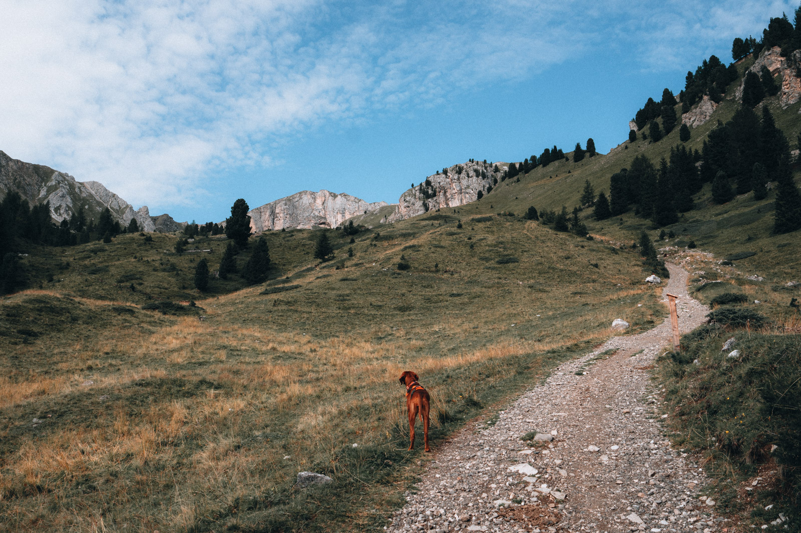
Prima di iniziare
Come usare il corso, cosa serve e come impostare la fotocamera prima del primo scatto.
Come usare il corso
Il corso è diviso in quattro livelli. Si parte dalla tecnica, si passa a come si guarda una scena, poi ai generi e infine al progetto.
Ogni modulo è fatto di lezioni brevi. Leggile in ordine la prima volta. Poi torna su quelle che ti servono, quando ti servono.
Sotto ogni foto trovi i dati di scatto: diaframma, tempo, ISO, focale e fotocamera. Non sono un dettaglio. Sono il modo più rapido per capire una scelta. Abituati a leggerli.
La teoria si capisce leggendo. La fotografia si impara scattando. Ogni modulo chiude con un esercizio: fallo.
Cosa serve davvero
Meno di quanto pensi. Per seguire tutto il corso basta una fotocamera che ti lasci scegliere diaframma, tempo e ISO. Va bene anche un telefono con la modalità manuale, quella che spesso si chiama Pro.
Le foto del corso sono state fatte quasi tutte con due zoom: un grandangolo luminoso da 17 a 50 mm e un tele da 70 a 350 mm, su una mirrorless con sensore APS-C. Alcune con un telefono. Nessuna con attrezzatura da professionista.
Il kit minimo che consiglio
- Un corpo macchina qualsiasi con controlli manuali.
- Uno zoom standard, per esempio un 18-55 o un 17-50.
- Due schede di memoria e due batterie. Si esauriscono sempre nel momento sbagliato.
- Un panno in microfibra per l'obiettivo.
Un treppiede leggero e un tele arriveranno dopo, quando saprai per cosa ti servono. Comprare prima di sapere è il modo più veloce per spendere male.

Telefono o fotocamera
Il telefono di oggi fa foto ottime. Lo fa con il calcolo: unisce più scatti, schiarisce le ombre, sfoca lo sfondo con un algoritmo. Il risultato è piacevole e quasi sempre corretto.
Una fotocamera fa meno da sola e ti lascia decidere di più. Ha un sensore più grande, quindi meno rumore con poca luce. Ha obiettivi intercambiabili, quindi puoi arrivare lontano con un tele. E risponde subito ai comandi.
| Telefono | Fotocamera | |
|---|---|---|
| Sempre con te | Sì | Dipende |
| Controllo manuale | Limitato | Completo |
| Poca luce | Buono, con il calcolo | Migliore, con il sensore |
| Soggetti lontani | Debole | Con un tele, ottimo |
| Sfondo sfocato | Simulato | Ottico |
Il corso funziona con entrambi. Quando una tecnica richiede una fotocamera, lo dico.
Le impostazioni di partenza
Prima del primo esercizio, sistema la fotocamera una volta per tutte. Sono scelte che non dovrai più toccare.
- Formato RAW più JPEG. Il RAW conserva tutte le informazioni del sensore. Il JPEG è comodo da condividere. Ne parliamo nel modulo 5.
- Griglia nel mirino. Aiuta a tenere dritto l'orizzonte e a comporre.
- Istogramma visibile. È lo strumento più affidabile per giudicare l'esposizione. Lo vediamo nel modulo 2.
- Stabilizzazione attiva, se c'è. Va spenta solo sul treppiede, se il manuale lo consiglia.
- Data e ora corrette. Ti serviranno per ritrovare le foto.
- Suono di conferma spento. Per la street e per gli animali è una cortesia.
Un metodo per imparare
Ecco tre abitudini che fanno la differenza più di qualsiasi obiettivo.
- Scatta con un'intenzione. Prima di premere, chiediti cosa vuoi mostrare. Una frase basta.
- Riguarda e scegli. Alla fine di ogni uscita tieni solo le foto migliori. Scegliere è metà del lavoro del fotografo.
- Copia per capire. Prendi una foto che ami e prova a rifarla. Non per pubblicarla, ma per capire come è fatta.
Esercizio
Circa 20 minuti
Conosci la tua fotocamera
- Trova sul corpo macchina, senza manuale, dove si cambiano diaframma, tempo e ISO.
- Imposta RAW più JPEG, la griglia e l'istogramma.
- Fai dieci foto dello stesso oggetto da dieci punti diversi: alto, basso, vicino, lontano, di lato.
- Scegli la migliore e scrivi in una riga perché.
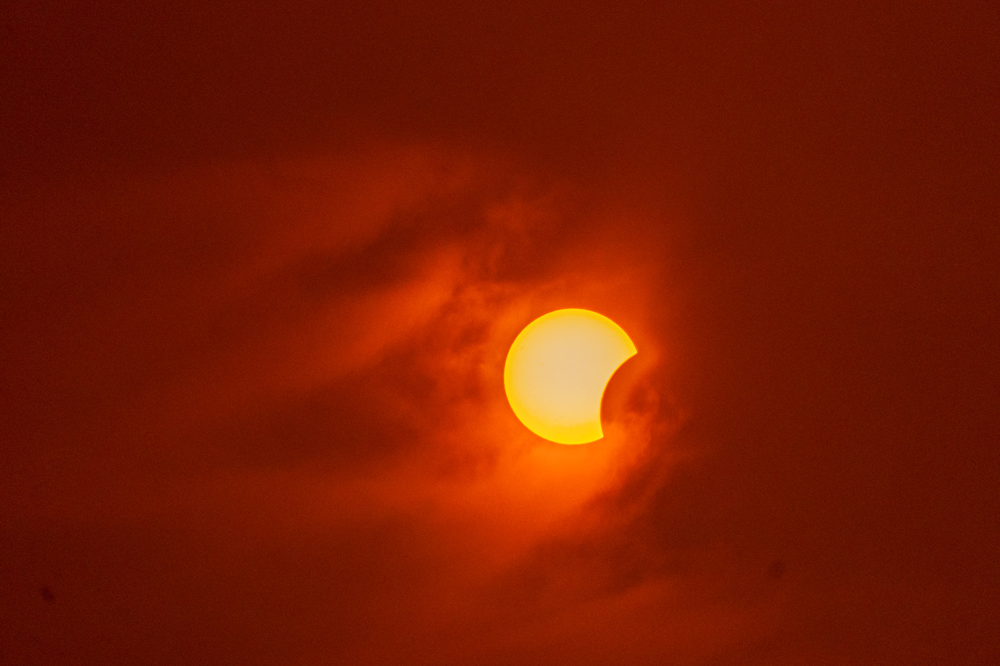
Come funziona una fotocamera
Luce, obiettivo, sensore. Tre pezzi, un solo lavoro: trasformare la luce in un'immagine.
Una scatola buia con un foro
Ogni fotocamera, dalla più semplice alla più costosa, funziona come una stanza buia con un piccolo foro su una parete. La luce entra dal foro e disegna sulla parete opposta un'immagine capovolta di quello che c'è fuori.
Questa è la camera oscura. I pittori la usavano secoli prima della fotografia. Alla fotocamera moderna mancava solo un modo per fissare quell'immagine. Prima con la pellicola, oggi con un sensore.

Oggi i pezzi sono tre:
- L'obiettivo raccoglie la luce e la mette a fuoco.
- Il diaframma e l'otturatore decidono quanta luce passa e per quanto tempo.
- Il sensore trasforma la luce in dati.
L'obiettivo
Un foro da solo dà immagini molto scure e poco nitide. L'obiettivo è un gruppo di lenti che raccoglie molta più luce e la fa convergere in un punto preciso: il piano del sensore.
Due numeri lo descrivono:
- La focale, in millimetri. Dice quanto è ampia la scena che vedi. Un 17 mm abbraccia molto, un 350 mm stringe su un dettaglio lontano. È il tema del modulo 4.
- La luminosità massima, come f/4 o f/1,8. Dice quanto si può aprire il diaframma. Più il numero è piccolo, più luce entra.
Sugli zoom trovi spesso due valori, come f/4,5-6,3. Vuol dire che l'obiettivo è più luminoso alla focale corta e lo è meno alla focale lunga.
Il sensore
Il sensore è una griglia di milioni di piccoli recettori, i pixel. Ognuno conta quanta luce gli arriva durante lo scatto. Un filtro colorato sopra ogni pixel permette di ricostruire i colori.
Più è grande il sensore, più luce raccoglie a parità di inquadratura. Questo vuol dire meno rumore con poca luce e più facilità a sfocare lo sfondo.
| Formato | Dimensioni | Fattore di crop |
|---|---|---|
| Pieno formato | 36 × 24 mm | 1 |
| APS-C | circa 23,5 × 15,6 mm | 1,5 (1,6 per Canon) |
| Micro Quattro Terzi | 17,3 × 13 mm | 2 |
| Telefono, camera principale | circa 10 × 7 mm | da 3 a 4 circa |
Il fattore di crop
Un sensore più piccolo vede solo la parte centrale dell'immagine che l'obiettivo proietta. È come ritagliare la foto. Per questo un obiettivo sembra più lungo su un sensore piccolo.
Per confrontare le focali tra formati diversi si usa la focale equivalente: la focale reale moltiplicata per il fattore di crop.
Esempio. Il tele usato per molte foto del corso arriva a 350 mm. Sulla mirrorless APS-C equivale a circa 525 mm su pieno formato.
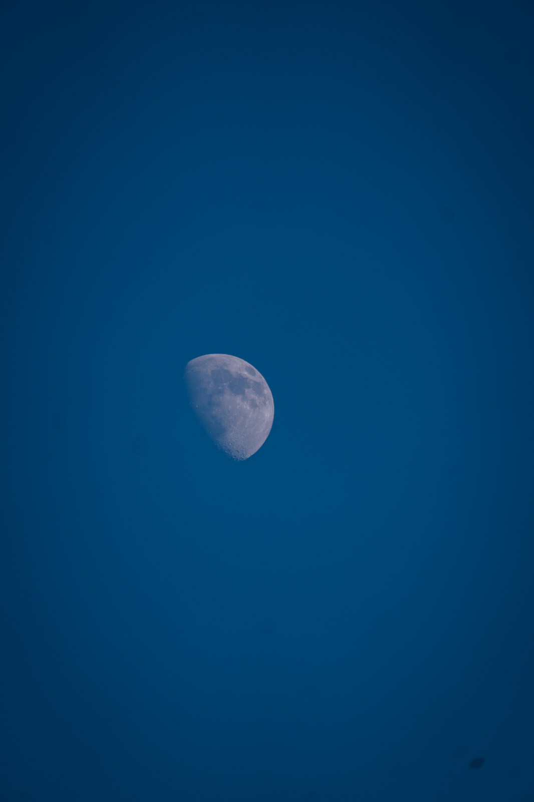
La focale vera dell'obiettivo non cambia. Cambia solo quanto della scena finisce nel fotogramma.
L'otturatore
L'otturatore decide per quanto tempo la luce arriva al sensore. Può essere di due tipi.
- Meccanico. Due tendine che si aprono e si chiudono davanti al sensore. Fa rumore, ma registra i movimenti rapidi senza deformarli.
- Elettronico. Il sensore si accende e si spegne riga per riga. È silenzioso e arriva a tempi rapidissimi. Su molti sensori però, con soggetti molto veloci, le righe lette in momenti diversi deformano l'immagine. Si chiama rolling shutter.
Per la street e per gli animali timidi l'elettronico è prezioso. Per lo sport con sensori normali, meglio il meccanico.
Reflex e mirrorless
Nella reflex uno specchio manda l'immagine dell'obiettivo in un mirino ottico. Al momento dello scatto lo specchio si alza e la luce arriva al sensore.
Nella mirrorless lo specchio non c'è. Il sensore è sempre acceso e manda l'immagine a uno schermo dentro il mirino.
Per chi impara la mirrorless ha un vantaggio enorme: nel mirino vedi già la foto come sarà, con la sua esposizione. Se sbagli, lo vedi prima di scattare.
Esercizio
Circa 15 minuti
Misura il tuo obiettivo
- Cerca nel manuale il formato del sensore della tua fotocamera e il fattore di crop.
- Calcola la focale equivalente dei valori minimo e massimo del tuo zoom.
- Fai la stessa foto alla focale più corta e a quella più lunga, senza muoverti.
- Confronta quanto della scena entra nelle due immagini.
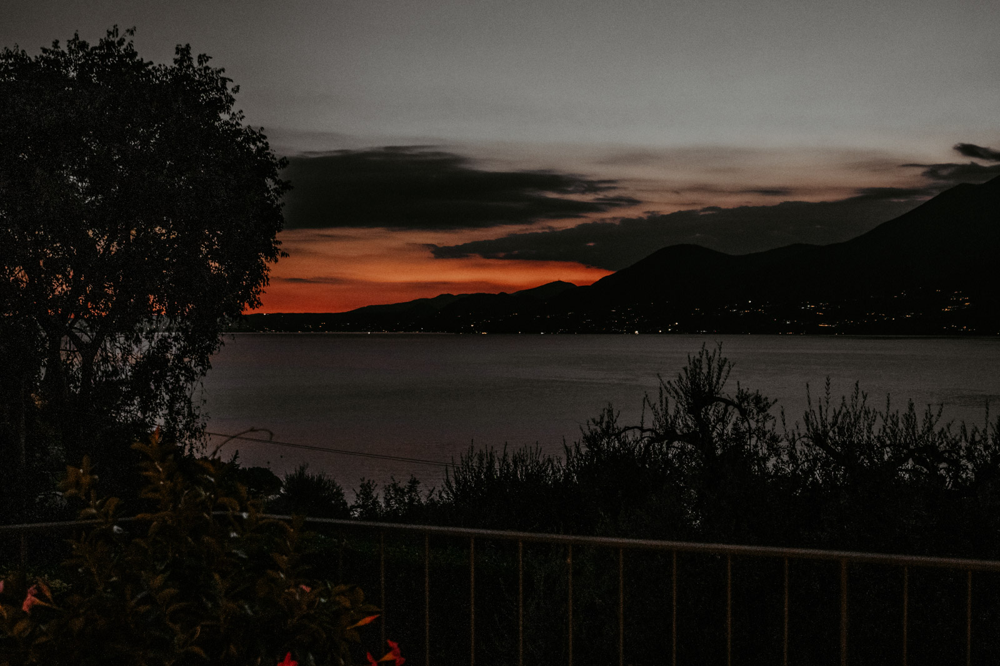
L'esposizione
Tre controlli decidono quanta luce arriva al sensore. Impararli bene vuol dire smettere di subire la fotocamera.
Cos'è l'esposizione
Una foto è luce raccolta. L'esposizione è la quantità di luce che il sensore riceve durante uno scatto.
Troppa luce e la foto è chiara, con le zone luminose bianche e senza dettaglio. Poca luce e la foto è scura, con le ombre che diventano nere.
La fotocamera ti dà tre controlli:
- Diaframma. Quanto è grande il foro da cui passa la luce.
- Tempo di scatto. Per quanto tempo il sensore resta esposto.
- ISO. Quanto viene amplificato il segnale raccolto.
Ognuno cambia la luminosità. Ma ognuno ha anche un effetto collaterale sull'immagine. Ed è lì che nascono le scelte.
Non esiste un'esposizione giusta in assoluto. Esiste quella che serve alla foto che hai in testa.
Lo stop
Lo stop è l'unità di misura della luce in fotografia. Uno stop in più vuol dire il doppio della luce. Uno stop in meno, la metà.
È utile perché funziona allo stesso modo per tutti e tre i controlli. Se togli uno stop da una parte e lo aggiungi dall'altra, la foto resta luminosa uguale.
| Controllo | Più luce, poi sempre meno | ||||
|---|---|---|---|---|---|
| Diaframma | f/2,8 | f/4 | f/5,6 | f/8 | f/11 |
| Tempo | 1/60 | 1/125 | 1/250 | 1/500 | 1/1000 |
| ISO | 1600 | 800 | 400 | 200 | 100 |
Molte fotocamere si muovono in terzi di stop. Tra f/4 e f/5,6 trovi f/4,5 e f/5. Tra 1/125 e 1/250 trovi 1/160 e 1/200. Il principio non cambia.
Il diaframma
Il diaframma è un'apertura regolabile dentro l'obiettivo. Si indica con un numero f. Il numero piccolo vuol dire apertura grande: f/2,8 fa entrare molta più luce di f/16.
Sembra controintuitivo. Pensa al numero f come a una frazione: f/2 è una metà, f/16 è un sedicesimo.
L'effetto collaterale: la profondità di campo
La profondità di campo è la zona della foto che appare a fuoco, davanti e dietro al soggetto. Diaframma aperto vuol dire zona nitida sottile e sfondo sfocato. Diaframma chiuso vuol dire zona nitida ampia.
Il diaframma però non lavora da solo. Contano altri due fattori:
- La focale. Un teleobiettivo stringe la profondità di campo. Un grandangolo la allarga.
- La distanza. Più sei vicino al soggetto, più lo sfondo si sfoca.

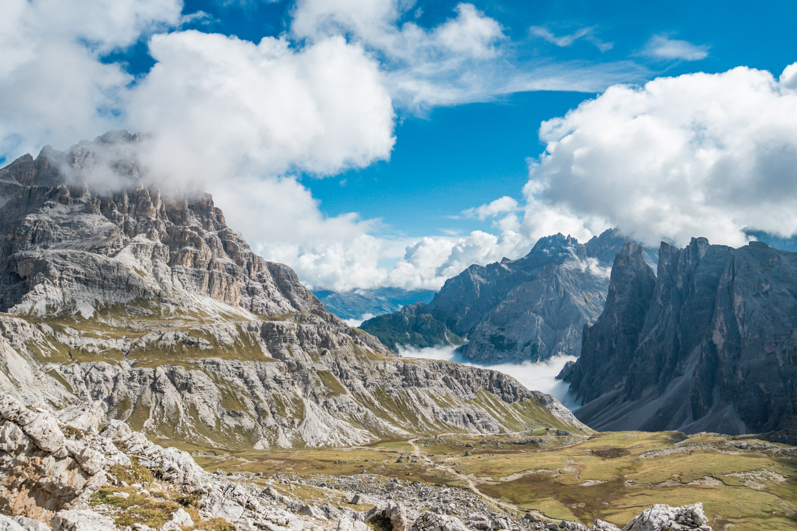
Guarda i dati. La foto della valle è stata scattata con il diaframma più aperto delle due. Eppure è nitida dappertutto. Il merito è della focale corta e delle montagne lontane.
Il limite dall'altra parte
Chiudere tanto non è sempre meglio. Oltre f/11 o f/16 entra in gioco la diffrazione, che ammorbidisce un po' tutta l'immagine. Per il paesaggio un buon punto di partenza è f/8.
Il tempo di scatto
Il tempo di scatto è quanto resta aperto l'otturatore. Si misura in frazioni di secondo: 1/1000 è un millesimo, 1/30 è un trentesimo.
L'effetto collaterale: il movimento
Un tempo rapido congela quello che si muove. Un tempo lungo lo trasforma in una scia. Nessuno dei due è sbagliato. Dipende da cosa vuoi raccontare.
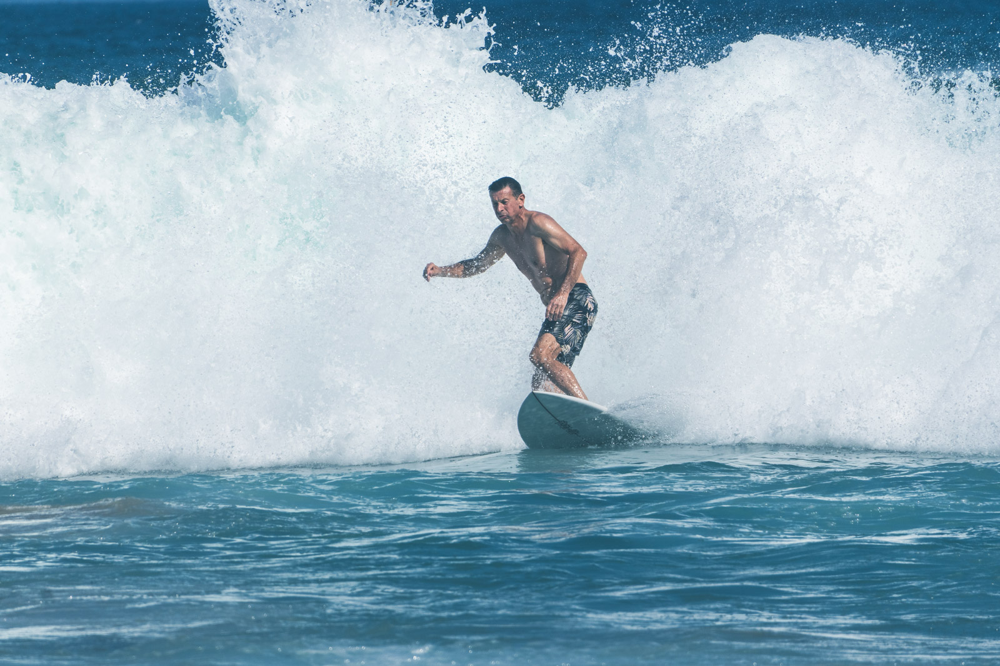
Qualche riferimento per congelare il soggetto:
| Soggetto | Tempo di partenza |
|---|---|
| Persone che camminano | 1/250 |
| Bambini e cani che giocano | 1/500 |
| Sport, surf, corsa | 1/1000 e oltre |
| Uccelli in volo | 1/2000 e oltre |
Il mosso della tua mano
C'è anche un movimento che non vuoi mai: quello della fotocamera. La regola classica dice di non scendere sotto 1 diviso la focale. Con un sensore APS-C la focale va moltiplicata per 1,5.
Esempio: con 350 mm su APS-C la focale equivalente è circa 525 mm. Il tempo di sicurezza è 1/500. Lo stabilizzatore ti fa guadagnare qualche stop, ma solo sul mosso tuo. Il soggetto che si muove resta mosso.

Gli ISO
Gli ISO indicano quanto la fotocamera amplifica il segnale del sensore. Raddoppiare gli ISO equivale a uno stop in più di luminosità.
L'effetto collaterale: il rumore
Amplificare il segnale amplifica anche i difetti. Ad ISO alti compare il rumore: una grana fine, più evidente nelle ombre, e colori meno puliti.
Regola pratica: tieni gli ISO bassi quando la luce c'è. Alzali senza paura quando l'alternativa è una foto mossa. Il rumore si attenua in post-produzione. Il mosso no.

I tre insieme
Questa è la parte che conta. Diaframma, tempo e ISO si scambiano gli stop tra loro. Puoi ottenere la stessa luminosità in tanti modi diversi.
| Diaframma | Tempo | ISO | Cosa ottieni |
|---|---|---|---|
| f/2,8 | 1/1000 | 100 | Sfondo molto sfocato, movimento fermo |
| f/4 | 1/500 | 100 | Sfondo sfocato |
| f/8 | 1/125 | 100 | Buona nitidezza, il classico |
| f/16 | 1/30 | 100 | Tutto a fuoco, rischio di mosso |
| f/16 | 1/250 | 800 | Tutto a fuoco e fermo, un po' di rumore |
Sul sito trovi un simulatore per provare. La foto è quella dell'antilope e parte dai dati reali di scatto. Cambia un controllo, guarda l'esposimetro, poi riporta lo zero con un altro controllo.
Le modalità P, A, S, M
Sulla ghiera della fotocamera trovi quasi sempre queste quattro lettere. Decidono chi sceglie cosa.
| Modalità | Scegli tu | Sceglie la fotocamera |
|---|---|---|
| P, programma | ISO e compensazione | Diaframma e tempo |
| A o Av, priorità di diaframma | Diaframma | Tempo |
| S o Tv, priorità di tempi | Tempo | Diaframma |
| M, manuale | Tutto | Niente |
Il mio consiglio per iniziare: priorità di diaframma con ISO automatici, impostando un tempo minimo. Decidi tu la profondità di campo. La fotocamera tiene la luce sotto controllo e alza gli ISO solo quando serve.
Il manuale serve quando la luce è stabile e vuoi lo stesso risultato in tutti gli scatti. Per esempio una notte stellata, un panorama da unire o una sessione in studio.
Esposimetro e compensazione
L'esposimetro misura la luce della scena e propone un'esposizione. Ha un limite che devi conoscere: dà per scontato che la scena sia di un grigio medio.
Quasi sempre funziona. Ma davanti a una scena tutta chiara o tutta scura sbaglia, e sempre nella stessa direzione.
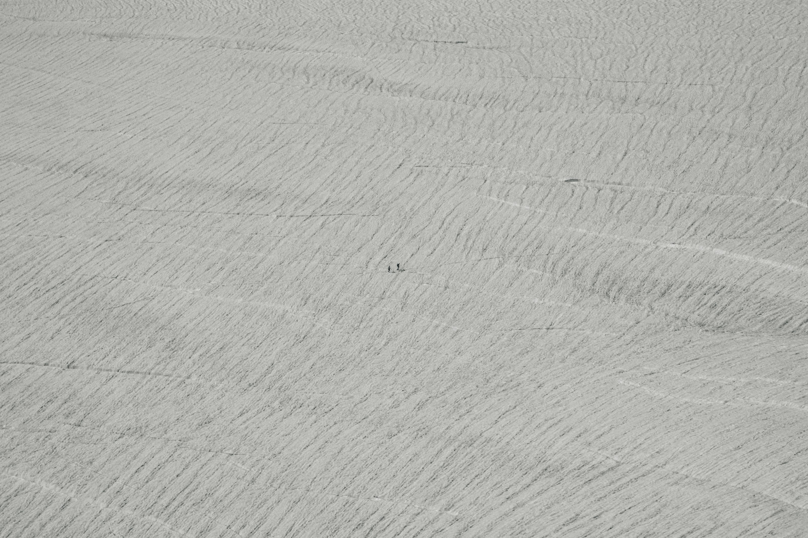
- Scena molto chiara, come neve, spiaggia o nebbia: compensa da +1 a +2 stop.
- Scena molto scura, come un soggetto nero o una notte: compensa da −1 a −2 stop.
I modi di misurazione
- Multizona. Analizza tutta la scena. È la scelta di tutti i giorni.
- Media pesata al centro. Dà più peso al centro dell'inquadratura.
- Spot. Misura una zona minuscola. Utile con un soggetto illuminato su uno sfondo buio, o il contrario.
L'istogramma
Lo schermo della fotocamera mente. Di giorno sembra tutto scuro, di notte tutto chiaro. L'istogramma no.
È un grafico della luminosità dei pixel. A sinistra le ombre, a destra le alte luci, al centro i toni medi. L'altezza dice quanti pixel ci sono per ogni tono.
Questi istogrammi sono calcolati dal vivo sui pixel delle foto. Non esiste una forma giusta. Contano due cose:
- Il bordo destro. Se i dati si schiacciano contro il bordo, quelle alte luci sono bianche pure e non le recuperi più.
- Il bordo sinistro. Se si schiacciano a sinistra, le ombre sono nere. Si recupera qualcosa, ma con rumore.
Nel simulatore una linea rossa sul bordo dell'istogramma ti avvisa quando succede.
Esercizio
Circa 30 minuti, fotocamera o telefono con modalità manuale
Stessa luce, tre foto diverse
- Scegli un soggetto fermo con uno sfondo a qualche metro. Una pianta, una bici, una tazza su un tavolo.
- Metti la fotocamera in priorità di diaframma e ISO 100.
- Scatta a f/2,8 o al diaframma più aperto che hai, poi a f/8, poi a f/16. Annota i tempi che sceglie la fotocamera.
- Ripeti l'ultima foto alzando gli ISO finché il tempo non torna sopra il tempo di sicurezza.
- Confronta le quattro foto a schermo intero. Guarda lo sfondo, la nitidezza e la grana.
Poi trova una scena chiara, come un muro bianco al sole, e una scura. Scattale senza compensazione e poi con +1 e −1. Guarda l'istogramma di ciascuna.
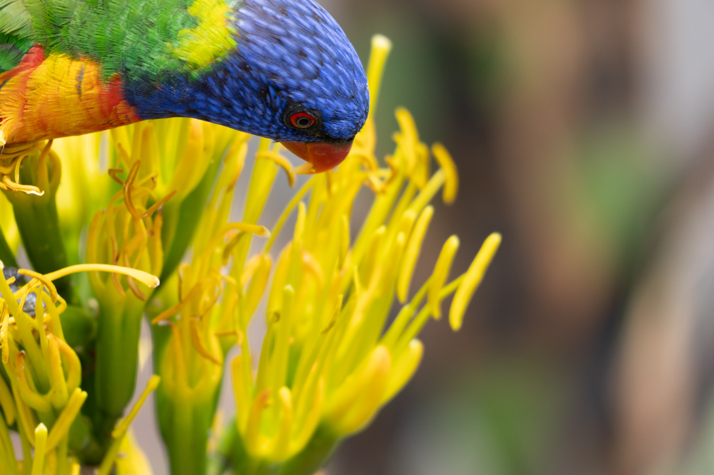
Messa a fuoco e nitidezza
Dove mettere il fuoco, quanto deve essere profondo e perché una foto a fuoco può sembrare comunque morbida.
Dove mettere il fuoco
Una foto può avere un solo piano perfettamente a fuoco. Tutto il resto è più o meno nitido a seconda della profondità di campo. Scegliere quel piano è la prima decisione di ogni scatto.
La regola che non tradisce mai: con persone e animali, metti a fuoco l'occhio più vicino a te. Se l'occhio è nitido, la foto regge anche se il resto è morbido. Se l'occhio è sfocato, nessun altro dettaglio la salva.
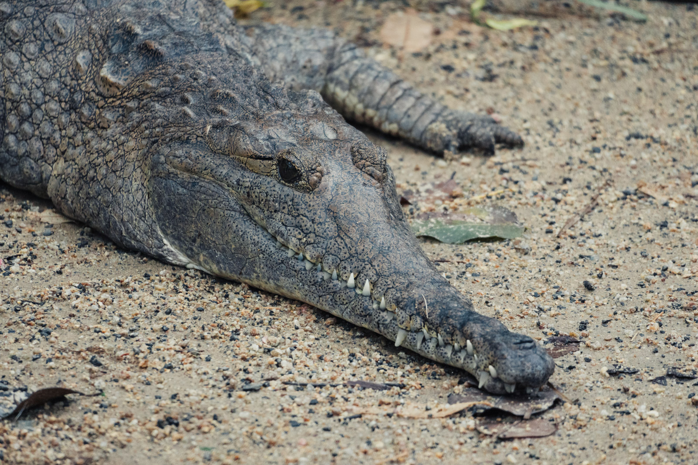
Nel paesaggio il soggetto è spesso tutto il fotogramma. Lì la domanda diventa un'altra: come tenere nitido sia il primo piano sia l'orizzonte. Ci arriviamo con l'iperfocale.
I modi dell'autofocus
| Modo | Cosa fa | Quando usarlo |
|---|---|---|
| Singolo, AF-S | Mette a fuoco e blocca | Soggetti fermi, paesaggio, architettura |
| Continuo, AF-C | Insegue il soggetto finché tieni premuto | Persone, animali, sport |
| Manuale, MF | Giri tu la ghiera | Notte, macro, scene dove l'AF si confonde |
Un consiglio pratico: lascia la fotocamera in AF-C quasi sempre. Con un soggetto fermo funziona comunque. Con un soggetto che si muove ti salva lo scatto.
Le aree di messa a fuoco
- Punto singolo. Scegli tu un punto preciso. Massimo controllo.
- Zona. La fotocamera sceglie dentro un'area. Utile con soggetti che si muovono in modo prevedibile.
- Inseguimento o tracking. Agganci il soggetto e la fotocamera lo segue nel fotogramma.
- Riconoscimento del soggetto. Le fotocamere recenti trovano da sole occhi di persone, animali e uccelli. È il più grande progresso degli ultimi anni.
Se la tua fotocamera ha il riconoscimento degli occhi, attivalo e impara come si comporta. Con animali e ritratti cambia tutto.
Separare fuoco e scatto
Di solito il pulsante di scatto premuto a metà mette a fuoco. Molti fotografi spostano la messa a fuoco su un pulsante dietro il corpo, sotto il pollice. Si chiama back button focus.
Così il dito indice scatta e il pollice mette a fuoco. Puoi mettere a fuoco una volta, togliere il pollice, ricomporre e scattare quante volte vuoi senza che il fuoco si sposti. E per inseguire un soggetto basta tenere premuto il pollice.
All'inizio sembra scomodo. Dopo una settimana non torni indietro.
Profondità di campo
La profondità di campo è la zona davanti e dietro al punto di fuoco che appare nitida. L'hai già incontrata nel modulo 2. Dipende da tre fattori:
- Diaframma. Più aperto, meno profondità.
- Focale. Più lunga, meno profondità a parità di inquadratura del fondo.
- Distanza dal soggetto. Più vicino, meno profondità.


Con soggetti vicini e tele lunghi la profondità di campo si misura in centimetri. Chiudere il diaframma è l'unico modo per allargarla senza allontanarsi.
L'iperfocale
Nel paesaggio vuoi spesso tutto nitido, dal fiore in primo piano alle montagne. La distanza iperfocale è il punto di fuoco che ti dà la massima profondità: tutto è nitido da metà di quella distanza fino all'infinito.
Si calcola così:
Iperfocale ≈ focale² ÷ (diaframma × circolo di confusione)
Il circolo di confusione è la sfocatura massima che l'occhio percepisce ancora come nitida. Per un sensore APS-C si usa circa 0,02 mm, per il pieno formato 0,03 mm.
Esempio su APS-C, con 17 mm a f/8: 17 × 17 ÷ (8 × 0,02) = circa 1800 mm. Metti a fuoco a 1,8 metri e avrai tutto nitido da circa 90 centimetri all'infinito.
| Focale | f/8 | f/11 |
|---|---|---|
| 17 mm | 1,8 m | 1,3 m |
| 24 mm | 3,6 m | 2,6 m |
| 35 mm | 7,7 m | 5,6 m |
Non serve essere precisi al centimetro. Una regola veloce che funziona quasi sempre con il grandangolo: metti a fuoco a circa un terzo della scena.
Mosso, micromosso e stabilizzazione
A volte il fuoco è giusto ma la foto è comunque morbida. Le cause più comuni sono tre.
- Mosso del soggetto. Il soggetto si è spostato durante lo scatto. Serve un tempo più rapido.
- Micromosso della fotocamera. La tua mano ha tremato. Anche un tremolio minimo ammorbidisce tutto il fotogramma. Rispetta il tempo di sicurezza del modulo 2.
- Fuoco mancato di poco. Ingrandisci la foto sull'occhio o sul punto che volevi nitido per capire.
Come riconoscerli: se è sfocato tutto in modo uniforme è micromosso. Se è nitido lo sfondo ma non il soggetto, è fuoco mancato o mosso del soggetto.
Lo stabilizzatore riduce il micromosso di qualche stop. Non ferma un soggetto che si muove.
La diffrazione
Chiudere il diaframma aumenta la profondità di campo. Ma oltre un certo punto la luce, passando da un foro troppo piccolo, si sparpaglia. L'immagine perde un po' di nitidezza ovunque.
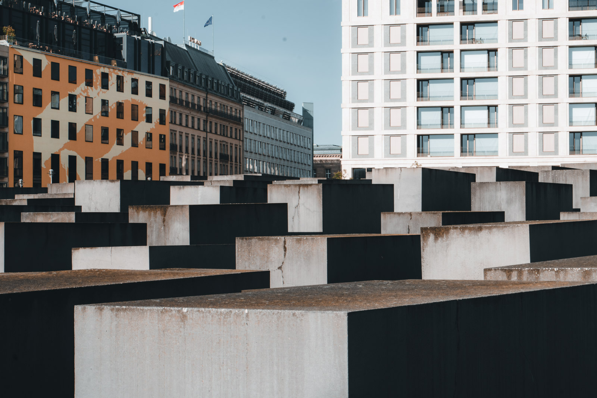
Su APS-C la diffrazione inizia a vedersi da f/11 e diventa evidente a f/16 e oltre. Usa i diaframmi chiusi quando la profondità ti serve davvero. Per il resto, f/8 è il punto più nitido di quasi tutti gli obiettivi.
Esercizio
Circa 30 minuti
Tre piani, tre foto
- Disponi tre oggetti su un tavolo a distanze diverse: uno vicino, uno a metà, uno lontano.
- Con il diaframma più aperto, scatta tre foto mettendo a fuoco ogni volta un oggetto diverso.
- Ripeti a f/8 e a f/16.
- All'aperto, con il grandangolo, prova l'iperfocale: metti a fuoco alla distanza della tabella e controlla primo piano e orizzonte.

Obiettivi e focali
La focale decide quanto mondo entra nella foto. La distanza decide come appare.
Focale e angolo di campo
La focale, in millimetri, dice quanto è ampio lo sguardo dell'obiettivo. Focale corta, sguardo largo. Focale lunga, sguardo stretto.
| Focale equivalente | Angolo | Famiglia |
|---|---|---|
| 14 mm | 114° | Ultragrandangolo |
| 24 mm | 84° | Grandangolo |
| 35 mm | 63° | Grandangolo moderato |
| 50 mm | 47° | Normale |
| 85 mm | 29° | Medio tele |
| 200 mm | 12° | Tele |
| 400 mm e oltre | 6° e meno | Supertele |
Il 50 mm si chiama normale perché il suo angolo è vicino a quello che percepiamo guardando con attenzione. Non è una legge, è una convenzione.
La prospettiva dipende dalla distanza
Questa è la lezione più importante del modulo. Si dice spesso che il teleobiettivo comprime e il grandangolo dilata. È vero solo in parte.
La prospettiva, cioè il rapporto di grandezza tra le cose vicine e quelle lontane, dipende solo da dove ti trovi. La focale decide quanto di quella prospettiva finisce nel fotogramma.
Con il tele stai lontano e prendi un pezzo piccolo della scena. Gli oggetti a distanze diverse sembrano schiacciati uno sull'altro. Con il grandangolo stai vicino e prendi molto. Le cose vicine diventano enormi, quelle lontane piccolissime.


Il grandangolo
Il grandangolo non serve a far entrare tutto. Serve ad avvicinarsi. La sua forza è un primo piano forte che porta l'occhio verso lo sfondo.

- Avvicinati al primo piano. Un sasso, un fiore, una ringhiera. Se non c'è niente di vicino, il grandangolo rende la scena vuota.
- Attento ai bordi. Linee e volti ai margini si deformano.
- Tieni la fotocamera dritta se non vuoi che gli edifici sembrino cadere all'indietro.
Il teleobiettivo
Il tele isola. Prende un dettaglio lontano e lo stacca dal resto. Sfoca facilmente lo sfondo e avvicina soggetti che non puoi avvicinare, come animali selvatici o una cima lontana.

- Serve un tempo rapido. Ogni tremolio si vede di più. Ricorda il tempo di sicurezza.
- Il calore e la foschia peggiorano la nitidezza dei soggetti molto lontani. Le ore fresche del mattino aiutano.
- Usalo anche nel paesaggio. Isolare una parte di montagna spesso racconta più di un panorama.
Fissi o zoom
Un obiettivo fisso ha una sola focale. Uno zoom ne copre diverse.
| Fisso | Zoom | |
|---|---|---|
| Luminosità | Spesso f/1,4-f/2 | Spesso f/2,8-f/6,3 |
| Peso | Leggero | Più pesante |
| Versatilità | Una sola inquadratura | Molte |
| Per imparare | Ti obbliga a muoverti | Ti fa restare fermo |
Un esercizio che consiglio a tutti: per un mese usa una sola focale. Con lo zoom bloccalo su 35 mm o 50 mm equivalenti. Impari a vedere in quella focale e smetti di zoomare al posto di camminare.
Quale obiettivo per cosa
| Genere | Focale equivalente tipica |
|---|---|
| Paesaggio | 16-35 mm, e un tele per i dettagli |
| Street | 28-50 mm |
| Viaggio | Uno zoom 24-105 mm |
| Ritratto | 50-135 mm |
| Animali selvatici e uccelli | 300-600 mm |
| Architettura | 16-24 mm |
Sono punti di partenza. Le foto migliori spesso nascono usando la focale sbagliata per il genere giusto.
Esercizio
Circa 40 minuti, all'aperto
La prova della prospettiva
- Metti una persona o un oggetto davanti a uno sfondo lontano, come un palazzo o una collina.
- Fai una foto con la focale più corta, vicino al soggetto, in modo che riempia metà del fotogramma.
- Allontanati e rifai la foto con la focale più lunga, con il soggetto della stessa grandezza.
- Confronta lo sfondo. Il soggetto è uguale, lo sfondo cambia completamente.
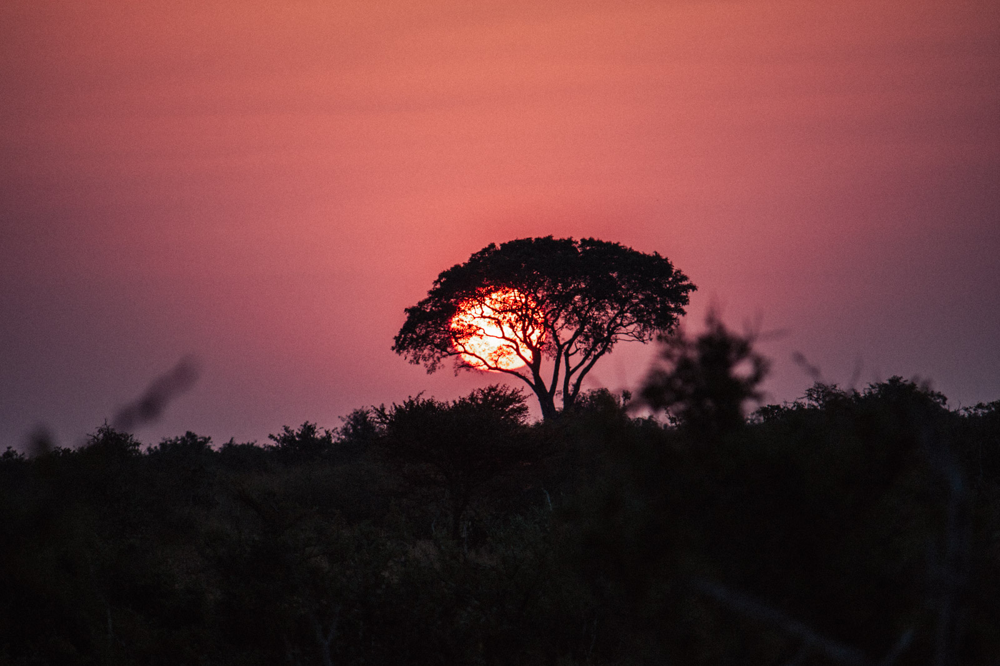
Colore e file
Bilanciamento del bianco, RAW e JPEG, gamma dinamica e spazi colore.
Il bilanciamento del bianco
La luce ha un colore. Quella di una candela è arancione, quella di un cielo coperto è azzurrina. Il nostro cervello lo corregge senza che ce ne accorgiamo. La fotocamera no: deve sapere che colore ha la luce per rendere bianco ciò che è bianco.
Il colore della luce si misura in gradi Kelvin. Numeri bassi, luce calda. Numeri alti, luce fredda.
| Sorgente | Temperatura indicativa |
|---|---|
| Candela | 1800 K |
| Lampadina a incandescenza | 2700-3200 K |
| Alba e tramonto | 3000-4000 K |
| Sole a mezzogiorno | 5000-5500 K |
| Cielo coperto | 6500 K |
| Ombra con cielo sereno | 7500 K e oltre |
Il bilanciamento automatico funziona bene quasi sempre. Sbaglia quando la luce ha un colore forte e voluto, come un tramonto: tende a neutralizzarlo e a togliere l'atmosfera.
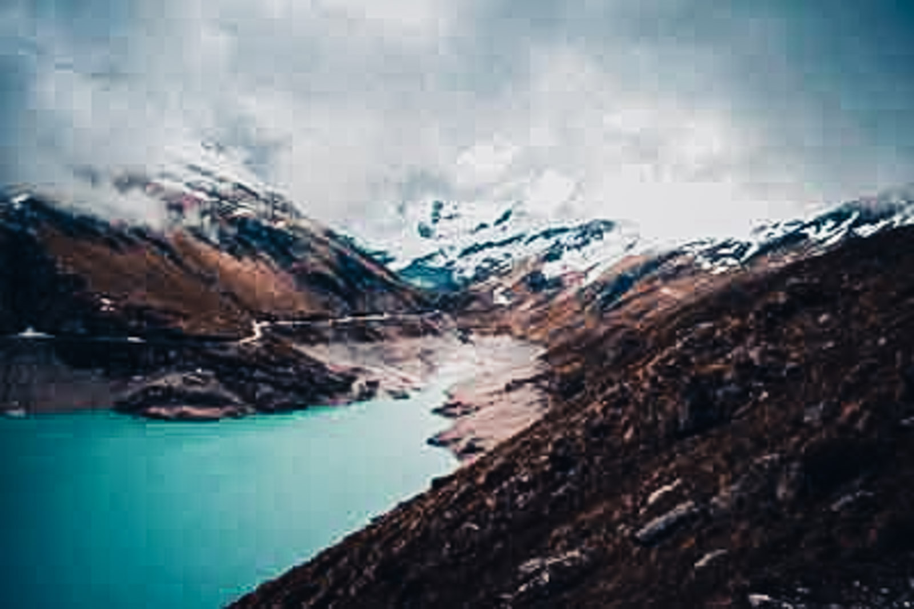
Sono due elaborazioni dello stesso file. Il bilanciamento del bianco non è solo correzione. È uno strumento per decidere l'atmosfera.
RAW o JPEG
Il JPEG è una foto finita. La fotocamera ha già deciso colori, contrasto e nitidezza e ha buttato via i dati che non servivano.
Il RAW è il dato grezzo del sensore. Non è ancora una foto: va sviluppato, come un negativo. In cambio conserva molte più informazioni.
| JPEG | RAW | |
|---|---|---|
| Toni per canale | 256 (8 bit) | Da 4096 a 16384 (12-14 bit) |
| Bilanciamento del bianco | Già applicato | Modificabile senza perdite |
| Recupero di luci e ombre | Limitato | Ampio |
| Peso del file | Leggero | Da 2 a 5 volte di più |
| Pronto da condividere | Sì | No, va sviluppato |
Il mio consiglio è RAW più JPEG. Il JPEG ti serve per guardare e condividere subito. Il RAW per le foto che vale la pena sviluppare con cura.
La gamma dinamica
La gamma dinamica è la differenza tra le zone più scure e quelle più chiare che un sensore riesce a registrare con dettaglio. Si misura in stop.
Un buon sensore moderno arriva a 12-14 stop. Sembra tanto, ma una scena con il sole e un'ombra profonda può superarlo. In quel caso devi scegliere cosa sacrificare, oppure usare le tecniche del modulo 16.
Regola pratica: proteggi le alte luci. Un'ombra scura si schiarisce con un po' di rumore. Un cielo bianco puro è perso per sempre.
Gli spazi colore
Uno spazio colore è l'insieme dei colori che un file o uno schermo può rappresentare. I più comuni sono tre.
- sRGB. Lo standard del web e della maggior parte degli schermi. Il più piccolo, il più sicuro.
- Display P3. Più ampio, soprattutto nei rossi e nei verdi. È lo spazio degli schermi Apple e di molti telefoni.
- Adobe RGB. Ampio nei verdi e nei ciani. Utile per la stampa di qualità.
Se scatti in RAW, lo spazio colore lo scegli quando esporti. Per pubblicare online esporta in sRGB. Così i colori appaiono uguali su qualsiasi schermo. Le foto di questo sito sono tutte in sRGB.
Archiviare senza perdere niente
Un file che esiste in un solo posto non esiste. La regola più diffusa è il 3-2-1:
- 3 copie di ogni foto,
- su 2 supporti diversi, per esempio il disco del computer e un disco esterno,
- di cui 1 fuori casa, per esempio un servizio cloud.
Svuota la scheda di memoria solo dopo aver controllato che le copie ci sono.
Esercizio
Circa 30 minuti
Il colore della luce
- Fotografa lo stesso foglio bianco in tre luci diverse: al sole, all'ombra e sotto una lampadina di casa.
- Scatta ogni volta in bilanciamento automatico e poi in luce diurna, circa 5500 K.
- Confronta le sei foto. Nota come cambia il bianco e quale versione ti piace di più.
- Se scatti in RAW, apri un file in un programma di sviluppo e prova a spostare la temperatura.

Leggere la luce
Qualità, direzione, colore. Imparare a vedere la luce prima di guardare il soggetto.
Guardare la luce, non le cose
Chi inizia guarda il soggetto. Chi fotografa da anni guarda prima la luce che cade sul soggetto. È lo stesso luogo, ma con una luce diversa diventa un'altra foto.
Ogni luce si descrive con tre domande:
- Com'è? Dura o morbida.
- Da dove arriva? Davanti, di lato, da dietro, dall'alto.
- Di che colore è? Calda, neutra, fredda.
Impara a rispondere prima di alzare la fotocamera. Diventa un'abitudine in poche settimane.
Luce dura e luce morbida
La qualità della luce dipende da quanto è grande la sorgente rispetto al soggetto. Non da quanto è forte.
- Luce dura. Sorgente piccola, come il sole in un cielo sereno. Ombre nette, contrasto alto, colori saturi.
- Luce morbida. Sorgente grande, come un cielo coperto o la nebbia. Ombre sfumate, contrasto basso, dettagli delicati.


Nessuna delle due è migliore. La luce dura dà forza e grafica. Quella morbida dà atmosfera e racconta i dettagli. Il problema nasce solo quando la luce non è adatta al soggetto.
La direzione
| Direzione | Effetto |
|---|---|
| Frontale, il sole alle tue spalle | Colori pieni, poche ombre, volume piatto |
| Laterale | Rivela le forme e le texture, dà profondità |
| Controluce | Sagome, bordi luminosi, atmosfera |
| Dall'alto, a mezzogiorno | Ombre corte e dure sotto gli oggetti |
La luce laterale è la più ricca per il paesaggio e il ritratto. Il controluce è il più difficile da esporre e il più generoso quando funziona.

In controluce l'esposimetro va in difficoltà. Decidi tu cosa deve essere esposto bene: il cielo, e allora il soggetto diventa nero, oppure il soggetto, e allora il cielo si brucia.
Il colore della luce
Hai visto i gradi Kelvin nel modulo 5. Nella pratica conta sapere come cambia il colore della luce durante il giorno.
- Ora d'oro. Più o meno l'ora dopo l'alba e quella prima del tramonto. Sole basso, luce calda e laterale, ombre lunghe.
- Ora blu. Il tempo poco prima dell'alba e poco dopo il tramonto, con il sole sotto l'orizzonte. Cielo blu profondo, luci artificiali accese.
- Mezzogiorno. Luce neutra e dall'alto. Difficile per i volti e i paesaggi aperti, ma ottima nei boschi, nei vicoli e sott'acqua.


La durata dell'ora d'oro e dell'ora blu cambia con la latitudine e la stagione. D'estate e lontano dall'equatore durano di più. Vicino all'equatore il sole scende in fretta e la luce cambia in pochi minuti.
Il meteo è luce
Il bel tempo non è il tempo migliore per fotografare. Un cielo sereno e piatto è spesso il più noioso.
- Nuvole sparse creano zone di luce e ombra sul paesaggio. Aspetta che il sole illumini la parte giusta.
- Nebbia e foschia separano i piani e semplificano la scena.
- Dopo un temporale l'aria è pulita e i colori sono intensi.
- Neve riflette la luce ovunque e ammorbidisce le ombre. Ricordati la compensazione.

Esercizio
Una giornata intera, anche a intervalli
Lo stesso posto, cinque luci
- Scegli un luogo vicino a casa: una facciata, un albero, una strada.
- Fotografalo dallo stesso punto all'alba, a metà mattina, a mezzogiorno, al tramonto e all'ora blu.
- Per ogni foto scrivi le tre risposte: com'è la luce, da dove arriva, di che colore è.
- Metti le cinque foto in fila e scegli quella dove il luogo è più vero.
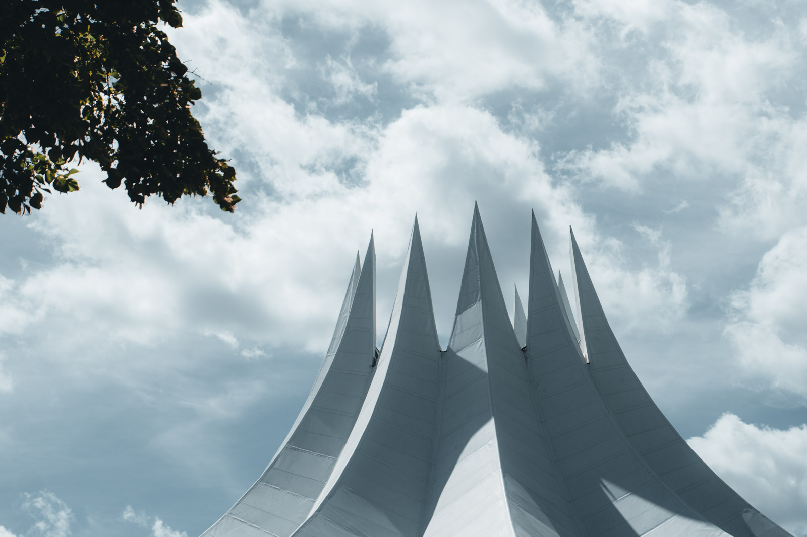
Composizione
Come organizzare quello che c'è nel fotogramma. Regole utili e quando superarle.
Cos'è comporre
Comporre è decidere cosa entra nel fotogramma, cosa resta fuori e come sono disposte le cose. È la differenza tra registrare una scena e mostrarla.
Le regole che seguono non sono leggi. Sono scorciatoie che funzionano spesso. Imparale bene, così saprai anche quando romperle.
Prima di scattare, chiediti qual è il soggetto. Se non sai rispondere in tre parole, la foto non lo saprà dire.
La regola dei terzi
Dividi il fotogramma con due linee orizzontali e due verticali, come un tris. Mettere il soggetto o l'orizzonte su una di quelle linee crea quasi sempre un equilibrio più dinamico del centro.
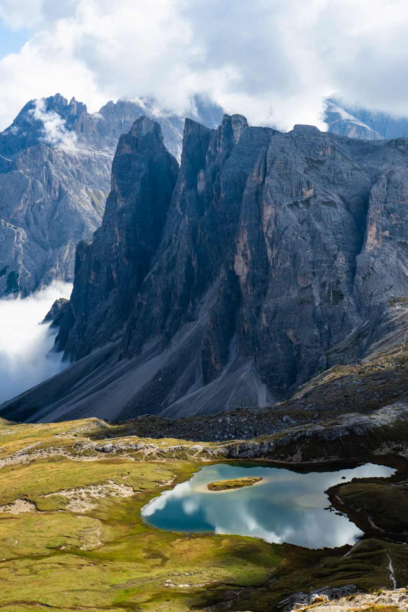
- Orizzonte in basso se il cielo è interessante.
- Orizzonte in alto se lo è la terra.
- Al centro quando vuoi simmetria o un riflesso perfetto.
Attiva la griglia nel mirino. Dopo un po' non ti servirà più.
Linee e direzioni
L'occhio segue le linee. Un sentiero, una strada, un fiume, una staccionata portano lo sguardo dentro la foto. Si chiamano linee guida.
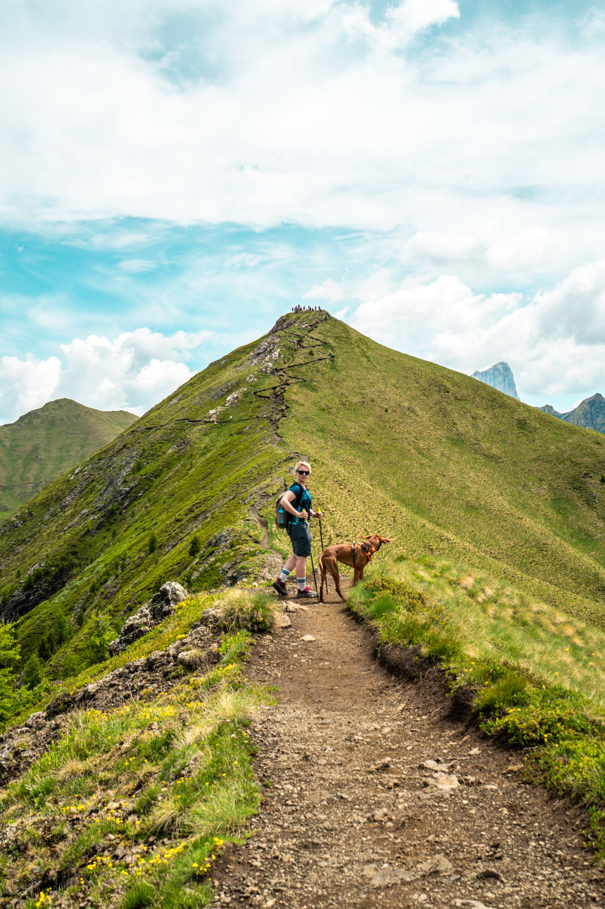
- Diagonali danno energia e movimento.
- Orizzontali danno calma.
- Verticali danno forza e altezza.
- Curve guidano lo sguardo con dolcezza.
Cornici naturali
Una porta, un arco, dei rami, l'apertura di una grotta. Inquadrare il soggetto dentro una cornice lo isola, aggiunge profondità e dice da dove stai guardando.
Simmetria e ripetizione
La simmetria è l'eccezione alla regola dei terzi. Quando la scena è simmetrica, mettila al centro e rendila perfetta. Un mezzo grado storto si nota subito.
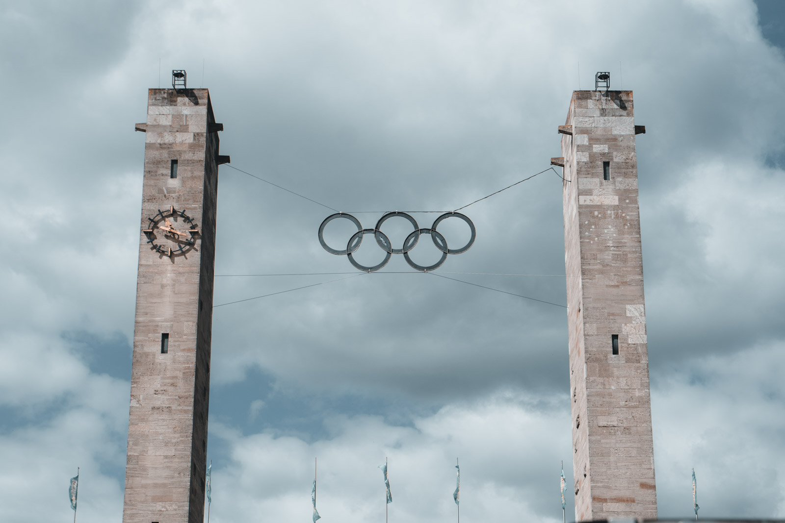
La ripetizione funziona allo stesso modo. Finestre, colonne, alberi in fila. E la foto diventa più forte quando qualcosa rompe il ritmo.
Spazio negativo
Lo spazio vuoto non è spazio sprecato. Un piccolo soggetto in un grande campo di cielo, acqua o neve diventa protagonista proprio perché è solo.
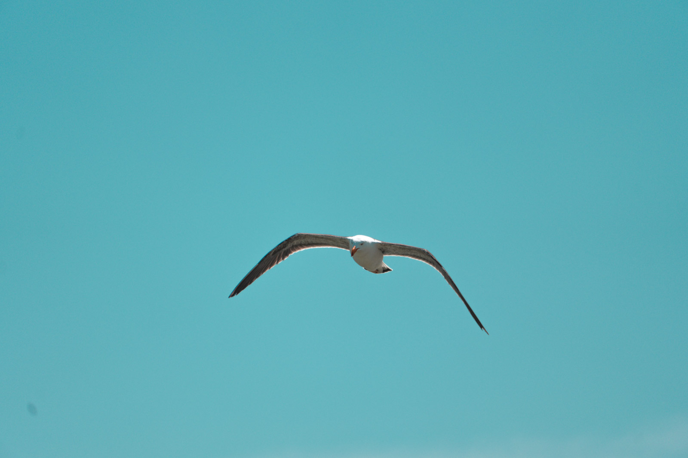
Lascia spazio nella direzione in cui il soggetto guarda o si muove. Se lo tagli davanti, sembra che stia per uscire dalla foto.
Il punto di vista
La maggior parte delle foto viene scattata in piedi, all'altezza degli occhi. È il punto di vista che tutti conoscono, quindi il meno sorprendente.
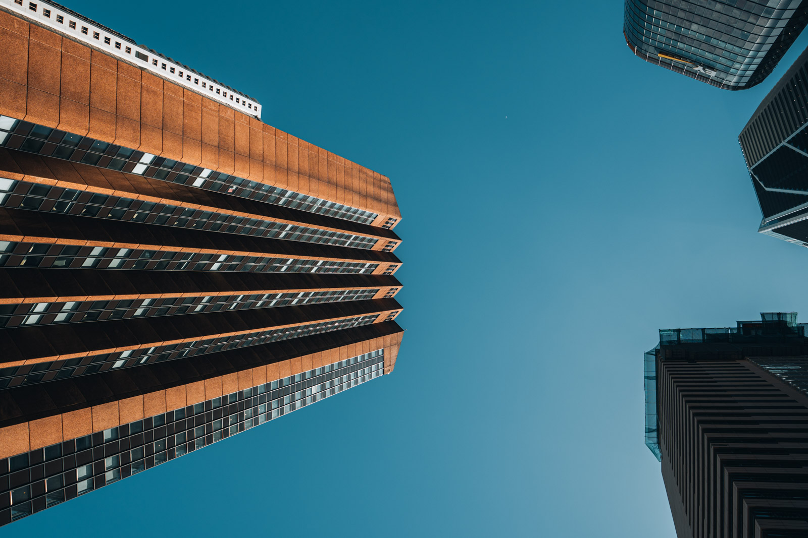
- Abbassati. Con animali e bambini, alla loro altezza.
- Alzati. Una scala, un ponte, una terrazza mostrano disegni che da terra non vedi.
- Guarda in alto. In città quasi nessuno lo fa.
- Fai due passi a lato. Spesso basta per pulire lo sfondo.
Semplificare
Il consiglio più utile di tutto il modulo: togli. Ogni elemento nel fotogramma deve avere un motivo per esserci. Se non ce l'ha, distrae.
- Controlla i bordi prima di scattare. Un ramo, un cartello, un pezzo di persona rovinano la foto.
- Avvicinati. Robert Capa diceva che se una foto non è abbastanza buona è perché non eri abbastanza vicino.
- Cambia focale per escludere.
- Cerca uno sfondo pulito prima del soggetto.
Esercizio
Circa un'ora
Un soggetto, dieci composizioni
- Scegli un soggetto semplice: una panchina, un albero, una bicicletta.
- Fai dieci foto diverse usando ogni volta uno strumento del modulo: terzi, centro, linea guida, cornice, simmetria, spazio negativo, dal basso, dall'alto, molto vicino, molto lontano.
- Scegli le tre migliori. Per ognuna scrivi cosa hai tolto dal fotogramma.

Il momento
Anticipare, aspettare, scattare. Il tempo giusto vale più della fotocamera giusta.
Il tempo dentro la foto
Una foto ferma un istante. Lo stesso luogo, con la stessa luce, un secondo prima o un secondo dopo è un'altra foto. Spesso peggiore.
Henri Cartier-Bresson lo chiamava il momento decisivo: l'istante in cui forma e contenuto si allineano. Non arriva per caso. Si prepara.
Il momento giusto non si cattura. Si aspetta, dopo averlo previsto.
Anticipare
Quasi tutto quello che si muove segue uno schema. Un'onda cresce e si rompe. Un cane torna verso chi lo chiama. Un aereo segue la sua traiettoria. Un uccello si posa sempre sullo stesso ramo.
- Osserva prima di scattare. Guarda la scena per qualche minuto. Cosa si ripete?
- Prepara inquadratura ed esposizione. Quando il momento arriva, non devi più pensare alla tecnica.
- Scatta un attimo prima. Tra quando decidi e quando la fotocamera scatta passano frazioni di secondo. Il tuo cervello è più lento di quanto credi.

La raffica
La raffica scatta molte foto al secondo finché tieni premuto. È uno strumento, non una strategia. Se non hai anticipato, scatterai venti foto del momento sbagliato.
- Usala in brevi scatti di uno o due secondi, centrati sul momento previsto.
- Pre-scatto. Molte mirrorless registrano già qualche frazione di secondo prima che tu prema del tutto il pulsante. Per uccelli e sport è prezioso.
- Attenzione al buffer. Dopo una lunga raffica la fotocamera si blocca a scrivere sulla scheda. Proprio quando succede la cosa migliore.


Aspettare
A volte la scena c'è già e manca solo un elemento. Una persona che passa nel punto di luce. Un uccello che entra nel cielo vuoto. Il sole che esce da una nuvola.
In quei casi la tecnica è una sola: componi, fermati e aspetta. Cinque minuti sembrano lunghi. Le foto migliori spesso arrivano al minuto sei.

Il gesto e lo sguardo
Con persone e animali il momento è quasi sempre un gesto o uno sguardo. La testa che si gira, la mano che si alza, gli occhi che incrociano l'obiettivo.
- Nei gruppi aspetta che le teste non si sovrappongano.
- Negli animali aspetta che la testa sia girata verso di te o di profilo pulito.
- Nello sport il momento migliore è spesso il punto più alto di un salto o il contatto, non la corsa.

Esercizio
Un'ora in un luogo con movimento
Prevedere invece di inseguire
- Vai in un posto dove qualcosa si ripete: una fontana, un incrocio, un parco con i cani, il mare.
- Per dieci minuti non scattare. Osserva e annota cosa si ripete.
- Scegli un punto preciso e componi l'inquadratura vuota.
- Aspetta che il soggetto entri nel punto giusto. Scatta solo allora, con raffiche brevi.

Paesaggio e montagna
Pianificare la luce, leggere il meteo, raccontare la scala. Dalla montagna al bosco, dall'acqua alla notte.
Pianificare
Il paesaggio è il genere in cui la preparazione conta di più. Il soggetto non si sposta, ma la luce sì. Arrivare nel posto giusto all'ora sbagliata è la delusione più comune.
- Sole e luna. App come PhotoPills o The Photographer's Ephemeris mostrano su una mappa dove sorgono e tramontano il sole e la luna in ogni giorno dell'anno.
- Meteo. Guarda la copertura nuvolosa per strati: bassa, media, alta. Le nuvole alte e sparse al tramonto si accendono. Quelle basse e compatte spengono tutto.
- Webcam. Molti rifugi e località hanno webcam. Sono il modo più rapido per sapere se in quota c'è nebbia o sole.
- Sopralluogo. Se puoi, vai di giorno. Scegli il punto di ripresa con calma e torna all'ora giusta.
Il paesaggista lavora per l'ora che verrà. Arriva prima, aspetta, e spesso torna una seconda volta.
Montagna e alta quota
La montagna è enorme, e una foto di montagna rischia di sembrare piccola. Il problema è la scala: senza un riferimento l'occhio non capisce quanto è grande quello che vede.
- Inserisci un riferimento. Una persona, una baita, un sentiero. Piccoli, ma visibili.
- Lavora per piani. Primo piano, piano medio, sfondo. Ogni piano aggiunge profondità.
- Usa anche il tele. Una parete, una cresta, un seracco isolati raccontano la montagna più di un panorama.


In quota la luce è più intensa e ricca di ultravioletti. Il cielo appare più scuro e le ombre più nette. Esponi per la neve e controlla l'istogramma: il bianco non deve toccare il bordo destro.
Acqua: laghi, fiumi, cascate, mare
L'acqua è il soggetto che cambia di più con il tempo di scatto.
| Effetto | Tempo di partenza |
|---|---|
| Gocce e spruzzi congelati | 1/1000 e più rapido |
| Acqua viva ma leggibile | 1/60-1/125 |
| Cascata setosa | da 1/2 a 2 secondi |
| Mare come nebbia | 30 secondi e oltre, con filtro ND |

- Riflessi. Un lago è uno specchio solo senza vento. Le prime ore del mattino sono le più calme.
- Polarizzatore. Ruotandolo togli i riflessi e vedi il fondo, o li rafforzi. Decidi tu.
- Tempi lunghi. Servono un treppiede e spesso un filtro ND, che toglie luce come un paio di occhiali da sole. Ne parliamo nel modulo 16.

Bosco e paesaggio intimo
Non tutto il paesaggio è panorama. Il paesaggio intimo è un dettaglio: un gruppo di alberi, una radice, il disegno della nebbia tra i tronchi.

- Cielo coperto è la luce migliore nel bosco. Il sole crea macchie bianche e ombre nere difficili da gestire.
- Cerca un ordine: un tronco più chiaro, una fila di alberi, una curva del sentiero.
- Escludi il cielo se è bianco. Toglie solo forza alla foto.
Condizioni difficili
Nebbia, neve, pioggia e temporali danno le foto più forti. Chiedono attenzione a te e all'attrezzatura.
- Neve. Compensa da +1 a +2 stop. Tieni le batterie al caldo, in una tasca interna: il freddo le scarica in fretta.
- Pioggia. Una busta di plastica o una copertura antipioggia bastano. Asciuga l'obiettivo spesso.
- Condensa. Rientrando dal freddo al caldo, lascia la fotocamera nella borsa chiusa per mezz'ora.
- Temporali. Nessuna foto vale un fulmine. In montagna e in spiaggia, con un temporale in arrivo, si scende.

Notte e Via Lattea
Fotografare il cielo stellato chiede un posto buio, un treppiede e un obiettivo luminoso. Le stelle si muovono: oltre un certo tempo diventano scie.
Il tempo massimo
La regola classica è la regola del 500: dividi 500 per la focale equivalente. Ottieni i secondi massimi prima che le stelle diventino scie.
Esempio su APS-C con 16 mm: focale equivalente 24 mm, 500 ÷ 24 = circa 20 secondi. Con i sensori moderni ad alta risoluzione la regola è un po' generosa. Calcolatori come la regola NPF, inclusa in PhotoPills, danno tempi più corti e più precisi.
Impostazioni di partenza
- Diaframma più aperto che hai, f/2,8 o meno se possibile.
- ISO da 3200 a 6400.
- Messa a fuoco manuale su una stella luminosa, ingrandita sullo schermo.
- Autoscatto di 2 secondi o telecomando, per non muovere il treppiede.
La Via Lattea è più visibile da primavera a fine estate nell'emisfero nord, lontano dalle città e senza luna.
Fotografare camminando
In montagna ogni grammo pesa. E la foto migliore arriva spesso a metà salita, quando la fotocamera è in fondo allo zaino.
- Un solo corpo e uno zoom che copra da grandangolo a medio tele. Un tele leggero solo se cerchi animali.
- Fotocamera fuori dallo zaino, su una clip agli spallacci o in una borsa sul petto. Se devi fermarti e aprire lo zaino, non scatterai.
- Batteria di scorta sempre, soprattutto con il freddo.
- Il telefono come seconda fotocamera. Per panoramiche e grandangoli spinti è perfetto.
Esercizio
Mezza giornata, più la preparazione
Il paesaggio pianificato
- Scegli un luogo raggiungibile con una vista ampia.
- Con un'app di effemeridi trova l'orario del tramonto e la direzione del sole.
- Controlla il meteo e le nuvole per strati.
- Arriva un'ora prima. Trova un primo piano e componi a tre piani.
- Scatta ogni dieci minuti dallo stesso punto, fino all'ora blu. Confronta.

Street
La città come palcoscenico. Approccio, luce urbana, geometrie e rispetto delle persone.
Cos'è la street
La fotografia di strada racconta la vita quotidiana negli spazi pubblici. Non c'è una posa, non c'è un set. C'è quello che succede, e il tuo modo di vederlo.
Non serve una grande città. Serve uno sguardo curioso e la disponibilità a tornare tante volte negli stessi posti.
Nella street il soggetto non è la persona. È il rapporto tra le persone, la luce e lo spazio.
Superare la timidezza
Quasi tutti, all'inizio, hanno paura di fotografare sconosciuti. È normale. Qualche abitudine aiuta.
- Parti dai luoghi, non dalle persone. Trova una bella luce o una bella geometria e aspetta che qualcuno ci entri.
- Resta nello stesso posto. Dopo dieci minuti nessuno fa più caso a te.
- Non nasconderti. Chi si nasconde sembra sospetto. Chi fotografa apertamente e sorride, molto meno.
- Se qualcuno ti chiede, rispondi. Mostra la foto. Se vuole che la cancelli, cancellala.
Messa a fuoco a zona
Nella street non c'è tempo per mettere a fuoco ogni volta. La tecnica classica è la messa a fuoco a zona: prepari in anticipo una fascia di distanze nitide e scatti senza pensarci.
- Imposta la messa a fuoco manuale.
- Chiudi il diaframma a f/8 o f/11.
- Metti a fuoco a circa 3 metri.
- Con un 35 mm equivalente, tutto da circa 1,5 metri fino a molti metri sarà accettabilmente nitido. Con focali più corte la zona si allarga ancora.
Usa gli ISO automatici con un tempo minimo di 1/250 per fermare chi cammina.

La luce della città
In città la luce rimbalza, si spezza, si colora. I muri fanno da riflettori, i vicoli da coni d'ombra, le vetrine da specchi.
- Lame di luce. Nelle ore basse il sole entra nelle strade e crea zone illuminate in mezzo all'ombra. Esponi per la luce e lascia che l'ombra diventi nera.
- Riflessi. Vetrine, pozzanghere, specchi. Raddoppiano la scena e la rendono ambigua.
- Insegne e neon. Di notte sono una sorgente di luce e un soggetto.


Geometrie e livelli
Le città sono fatte di linee. Strisce pedonali, scale, ombre, finestre. Una buona geometria è un palcoscenico in attesa di un attore.

- Lavora a strati. Qualcosa in primo piano, qualcosa a metà, qualcosa sullo sfondo. È la cosa più difficile e la più gratificante.
- Cerca il contrasto tra le forme rigide della città e i gesti delle persone.
- Non dimenticare i dettagli: mani, scarpe, oggetti. Raccontano senza mostrare volti.


Ritratti di strada
C'è anche un'altra street, quella in cui chiedi. Ti avvicini, spieghi cosa ti ha colpito e chiedi di fare un ritratto. Molte persone dicono di sì.
- Sii specifico: «Mi piace la luce sul suo cappello».
- Scatta in fretta, una o due foto. Non trasformarlo in una sessione.
- Offri di mandare la foto. È il modo migliore di ringraziare.
Etica e diritto all'immagine
In Italia fotografare in un luogo pubblico è generalmente consentito. Pubblicare è un'altra cosa. Il ritratto di una persona riconoscibile, secondo la legge sul diritto d'autore e il codice civile, in linea generale non può essere esposto o diffuso senza il suo consenso.
Ci sono eccezioni, per esempio per fatti di interesse pubblico o avvenuti in pubblico, per persone note o per scopi culturali e didattici. Ma non valgono mai se la foto lede la dignità o la reputazione della persona. Contano anche le regole sulla protezione dei dati personali.
Non sono un avvocato e queste righe non sono una consulenza. Nel dubbio, chiedi il consenso o scegli foto in cui le persone non sono riconoscibili. Oltre alla legge, c'è il rispetto:
- Non fotografare persone in difficoltà per farne uno spettacolo.
- Fai attenzione ai bambini. Senza il consenso dei genitori, non pubblicare.
- Chiediti sempre come ti sentiresti al posto di chi è nella foto.
Esercizio
Due ore in città
Un angolo, un'ora
- Scegli un incrocio, una piazza o una fermata con una luce interessante.
- Imposta la messa a fuoco a zona.
- Resta lì un'ora. Fotografa solo quello che succede in quell'angolo.
- Poi cammina per un'ora e fotografa solo dettagli: mani, ombre, oggetti.
- Scegli cinque foto, almeno due senza volti riconoscibili.

Viaggio
Raccontare un luogo, non collezionare cartoline.
Prima di partire
Un viaggio fotografico inizia a casa. Non per programmare ogni scatto, ma per sapere cosa cercare e non perdere tempo sul posto.
- Guarda le foto degli altri, poi mettile da parte. Ti servono per conoscere i luoghi, non per rifarle uguali.
- Segna orari di alba e tramonto e la direzione del sole sui luoghi principali.
- Informati sulle regole. Musei, luoghi di culto e siti naturali hanno spesso divieti su treppiedi, droni e flash.
- Porta poco. Un corpo, uno zoom versatile, un obiettivo luminoso piccolo. Il resto pesa e resta in albergo.
Un viaggio non è una lista di luoghi da fotografare. È un racconto da costruire.
Oltre la cartolina
Davanti ai luoghi famosi tutti scattano la stessa foto, dallo stesso punto, alla stessa ora. Falla anche tu: è un bel ricordo. Poi cerca la tua.

- Cambia ora. All'alba i luoghi famosi sono quasi vuoti e la luce è migliore.
- Cambia distanza. Un dettaglio della pietra, una persona che guarda il monumento.
- Gira le spalle. A volte la foto migliore è dietro di te, nella gente che guarda.


Raccontare un luogo
Il cinema racconta con campi diversi: il campo lungo per orientare, il campo medio per agire, il dettaglio per emozionare. Funziona anche per un racconto di viaggio.
| Campo | Cosa mostra | Esempio |
|---|---|---|
| Lungo | Dove siamo | Una città dall'alto, una valle |
| Medio | Cosa succede | Una piazza, un mercato, una strada |
| Dettaglio | Com'è fatto | Una mano, un cibo, una texture |


Ogni giorno chiediti se hai almeno una foto per ogni campo. Se manca il dettaglio, il racconto è freddo. Se manca il campo lungo, non si capisce dove siamo.
Persone, cibo, rituali
I luoghi diventano vivi con chi li abita. Mercati, cucine, feste, mestieri. Sono i soggetti più ricchi e quelli che chiedono più rispetto.
- Chiedi. Con un gesto, un sorriso, due parole nella lingua locale. In molti paesi è indispensabile.
- Rispetta i divieti nei luoghi sacri e nelle cerimonie. Alcune non si fotografano.
- Il cibo si fotografa meglio con luce laterale da una finestra, dall'alto o a 45 gradi.
- Compra, mangia, parla. Il fotografo che diventa cliente ottiene foto migliori del fotografo turista.
Luoghi naturali lontani
Deserti, coste, foreste tropicali. Luce, distanze e clima sono diversi da quelli di casa.

- Vicino all'equatore il sole sale e scende in fretta. La luce buona dura poco.
- Sabbia e salsedine sono nemiche dell'attrezzatura. Cambia obiettivo al riparo e pulisci ogni sera.
- Rispetta i luoghi sacri. Alcune parti di Uluru, per esempio, non si possono fotografare per rispetto della cultura aborigena. I cartelli lo indicano.
Il diario fotografico
Ogni sera, dieci minuti. Scarica le foto, fai una prima scelta veloce, scrivi due righe su cosa hai visto. Al ritorno ti servirà più di quanto pensi.
- Copia di sicurezza ogni sera su un secondo supporto.
- Prima scelta con le stelle o i colori, senza cancellare niente.
- Note su luoghi, nomi e storie. Diventeranno le didascalie.
Esercizio
Una giornata, anche nella tua città
Il turista nella propria città
- Scegli un quartiere della tua città che conosci poco.
- Fotografalo come se fossi in viaggio: campo lungo, campo medio, dettaglio.
- Fai almeno un ritratto chiedendo il permesso.
- La sera scegli dieci foto e mettile in un ordine che racconti la giornata.

Animali, ambiente per ambiente
Dal cane di casa alla savana. Tecnica, pazienza ed etica in ogni ambiente.
Attrezzatura e autofocus
Gli animali non posano, si spaventano e quasi sempre sono lontani. Per questo la fotografia di animali è il genere in cui l'attrezzatura conta di più. Ma meno di quanto si pensi.
- Un tele zoom che arrivi almeno a 300 mm equivalenti. Molte foto di questo modulo sono fatte con un 70-350 mm su APS-C, cioè fino a circa 525 mm equivalenti. Altre con un vecchio 55-250 mm.
- Autofocus continuo con il riconoscimento degli occhi di animali e uccelli, se la fotocamera lo ha.
- ISO automatici con un tempo minimo. Animali fermi: 1/500. In movimento: 1/1000. Uccelli in volo: 1/2000 e oltre.
- Raffica media, non massima. Ti lascia scegliere senza riempire la scheda.
Gli occhi a fuoco e all'altezza degli occhi dell'animale. Se rispetti solo queste due regole, metà del lavoro è fatto.
Etica prima di tutto
Nessuna foto vale il disturbo di un animale. È la regola su cui si fonda tutto il genere, e le principali associazioni di fotografia naturalistica la mettono al primo posto.
- Distanza. Se l'animale cambia comportamento per causa tua, sei troppo vicino. Allontanati.
- Niente esche e niente richiami per avvicinare animali selvatici.
- Mai disturbare nidi e tane, soprattutto nel periodo della riproduzione.
- Resta sui sentieri nelle aree protette e rispetta le regole del parco.
- Non condividere la posizione di specie rare o sensibili. Per questo le foto di questo sito non contengono dati GPS.
- Nei parchi faunistici e nei santuari, dichiaralo nella didascalia. Non spacciare un animale in un recinto per un animale libero.
Animali domestici
Il cane o il gatto di casa sono la palestra migliore. Sono vicini, li conosci e puoi riprovare ogni giorno.


- Abbassati fino all'altezza dei suoi occhi. Cambia tutto.
- Luce di finestra in casa, ombra aperta fuori. Evita il flash diretto.
- Un suono o un gioco tenuto vicino all'obiettivo attira lo sguardo nel momento giusto.
- Sessioni brevi. Quando si stanca, smetti.

Fauna alpina e animali di montagna
In montagna camosci, stambecchi e marmotte sono spesso più vicini di quanto si creda, soprattutto nei parchi dove sono abituati agli escursionisti. Le regole:
- Mattina presto. Gli animali sono attivi e la luce è morbida.
- Avvicinati lentamente, in diagonale e mai dall'alto. Un animale che vede qualcuno sopra di sé si sente minacciato.
- Fermati spesso e lascia che si abitui a te.
- Cerca l'ambiente. Uno stambecco con le cime sullo sfondo vale più di un primo piano stretto.
Anche gli animali al pascolo sono un soggetto della montagna. Sono più facili, ma valgono le stesse attenzioni: non disturbarli e non entrare nei recinti.


Bosco e sottobosco
Nel bosco c'è poca luce e molto disordine. Gli animali sono piccoli e nascosti. Serve pazienza e una buona gestione degli ISO.

- Accetta il rumore. Meglio ISO 6400 che una foto mossa.
- Cerca le radure e i bordi del bosco, dove arriva più luce.
- Insetti e rettili sono più tranquilli al mattino presto, quando fa ancora fresco.
Zone umide e uccelli
Laghi, paludi e fiumi sono i luoghi più ricchi di uccelli. Sono anche quelli dove la luce riflessa dall'acqua aiuta di più.


- Gli uccelli in volo chiedono tempi rapidissimi e l'inseguimento continuo. Allenati prima su gabbiani e piccioni.
- Gli uccelli fermi si fotografano meglio quando la testa è girata verso la luce: c'è un riflesso nell'occhio.
- Un capanno o un'auto ferma sono nascondigli ottimi. Molti animali non riconoscono una persona dentro un'auto.
Mare e costa
Sulla costa la luce è forte e i riflessi ingannano l'esposimetro. Sott'acqua cambia tutto: i colori spariscono in fretta con la profondità e il rosso è il primo ad andarsene.


- Sott'acqua avvicinati. Ogni metro d'acqua toglie nitidezza e colore.
- Non toccare animali e coralli. Non inseguire le tartarughe.
- Sale e sabbia: sciacqua l'attrezzatura ogni sera con acqua dolce, se è impermeabile, o puliscila con un panno umido.
Savana e safari
In un safari si fotografa quasi sempre da un veicolo. È una limitazione e una fortuna: gli animali sono abituati ai mezzi e li considerano parte del paesaggio.

- Un sacchetto di riso o fagioli appoggiato al finestrino stabilizza il tele meglio di un treppiede.
- Spegni il motore, o chiedi alla guida di farlo, prima di scattare. Le vibrazioni si vedono.
- Le prime e le ultime ore del giorno sono quelle in cui gli animali sono attivi e la luce è migliore. A mezzogiorno riposano all'ombra.
- Racconta anche l'ambiente. Un elefante piccolo nella savana immensa vale quanto un ritratto stretto.


Animali in città e nei parchi
Parchi, giardini e lungofiumi sono pieni di animali abituati alle persone. Sono il posto migliore per allenarsi con il tele prima di un viaggio.


Animali notturni e fototrappole
Molti mammiferi si muovono di notte. Per fotografarli senza disturbarli si usano le fototrappole: fotocamere con un sensore di movimento, lasciate per giorni in un punto di passaggio.
- Scegli il punto cercando tracce, impronte e sentieri degli animali.
- Luce infrarossa invisibile o un flash debole. Il flash forte e ripetuto può disturbare.
- Chiedi i permessi. In aree protette e su terreni privati le fototrappole spesso ne richiedono.
Parchi faunistici e santuari
Non tutti gli animali si incontrano liberi. Santuari, centri di recupero e parchi faunistici permettono di vederli da vicino. Sono ottimi per imparare, a due condizioni: scegli strutture serie e dichiaralo sempre nella didascalia.
- Reti e vetri: appoggia l'obiettivo, apri il diaframma e la rete sparisce nella sfocatura.
- Escludi gli elementi artificiali quando puoi, ma non mentire su dove hai scattato.
Esercizio
Tre uscite brevi
Tre ambienti, un soggetto
- Fotografa un animale domestico all'altezza dei suoi occhi, in casa con la luce di una finestra.
- In un parco cittadino, fotografa uccelli posati e poi in volo. Annota i tempi di scatto che funzionano.
- In un'area naturale, cerca un animale nel suo ambiente e fai una foto stretta e una larga.
- Per ogni foto scrivi una didascalia onesta: dove, quando, libero o in una struttura.
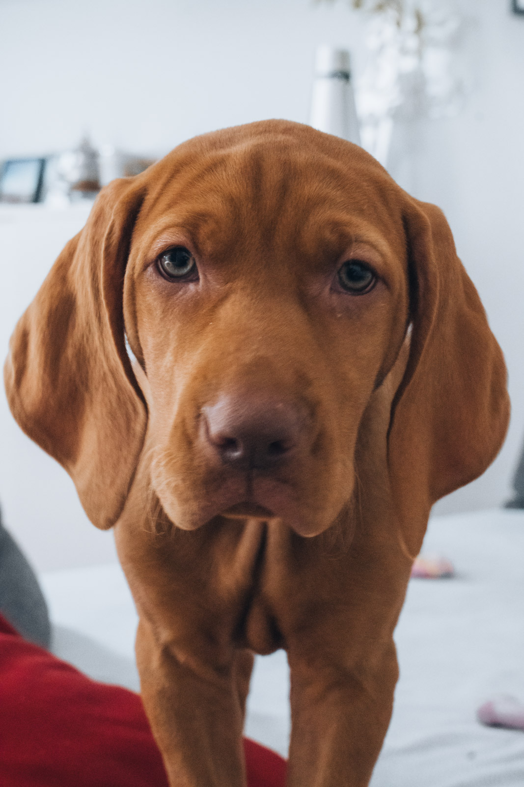
Ritratto
Luce sul volto, posa e relazione. Un ritratto è una conversazione.
Un ritratto è una relazione
La tecnica di un ritratto si impara in poche settimane. La parte difficile è un'altra: mettere a proprio agio chi hai davanti. Una persona tesa resta tesa anche con la luce perfetta.
- Parla. Spiega cosa stai facendo, chiedi, racconta. Il silenzio dietro l'obiettivo mette ansia.
- Mostra le prime foto. Rassicura e coinvolge.
- Lavora in fretta sulla tecnica, così il tempo resta per la persona.
- Le foto migliori arrivano spesso dopo, quando entrambi vi siete dimenticati della fotocamera.
Le stesse regole valgono per gli animali di casa. In questo modulo trovi anche loro: luce, occhi e punto di vista funzionano allo stesso modo.
La luce sul volto
Per il ritratto la luce morbida è quasi sempre la più generosa. Ammorbidisce la pelle e lascia leggere gli occhi.
- Luce di finestra. La più semplice e la più bella. Metti la persona di lato alla finestra, non di fronte.
- Ombra aperta. All'aperto, all'ombra di un edificio ma con il cielo davanti. Luce morbida e uniforme.
- Riflettore. Un pannello bianco, anche un foglio di cartone, dal lato opposto alla luce schiarisce le ombre.
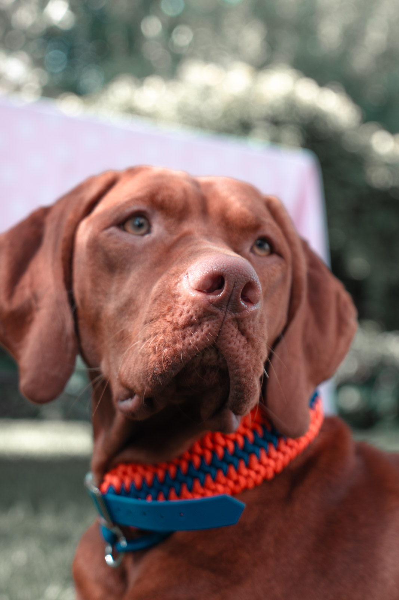
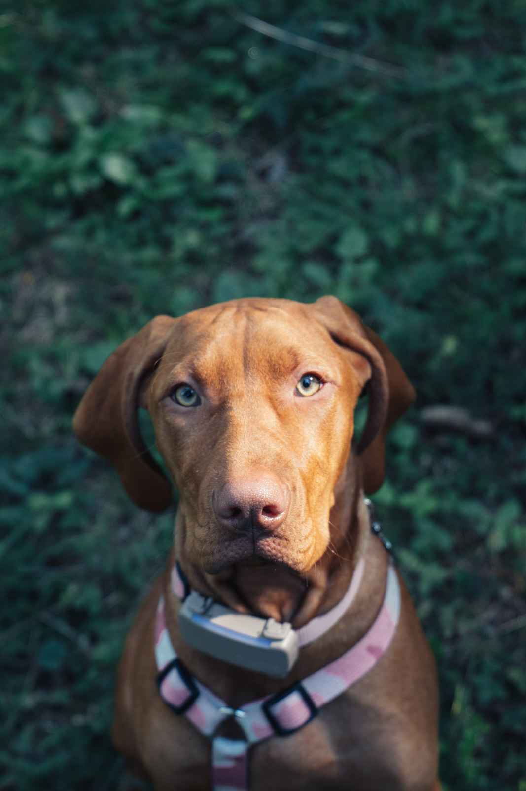
Gli schemi classici
| Schema | Dove sta la luce | Effetto |
|---|---|---|
| A farfalla | Davanti e in alto | Ombra piccola sotto il naso. Elegante, di moda. |
| Rembrandt | Di lato a 45 gradi e in alto | Un triangolo di luce sulla guancia in ombra. Drammatico. |
| Laterale | Di lato a 90 gradi | Metà volto in luce, metà in ombra. Forte. |
| Controluce | Dietro la persona | Un bordo luminoso sui capelli. Serve un riflettore davanti. |
Focale e diaframma
- Focale. Tra 50 e 135 mm equivalenti il volto ha proporzioni naturali. Con il grandangolo vicino il naso si ingrandisce e le orecchie spariscono.
- Diaframma. Tra f/2 e f/4 lo sfondo si sfoca e il viso resta nitido. Con diaframmi molto aperti e soggetti vicini, a volte è a fuoco un occhio solo. Se vuoi entrambi, chiudi un po'.
- Fuoco sull'occhio più vicino. Sempre.
- Altezza. La fotocamera all'altezza degli occhi o poco sopra. Dal basso la persona domina, dall'alto si rimpicciolisce.
La posa
Una posa naturale non è una posa assente. Qualche indicazione semplice cambia molto.
- Spalle ruotate rispetto alla fotocamera, volto verso di te. Il corpo frontale sembra più largo e rigido.
- Mento leggermente in avanti e verso il basso. Definisce la mascella.
- Mani occupate. Le mani ferme lungo il corpo sono il segnale più chiaro di imbarazzo. Dagli qualcosa da tenere o da fare.
- Peso su una gamba. Il corpo si rilassa.
- Movimento. Chiedi di camminare, girarsi, ridere. Fotografa durante, non dopo.
Il ritratto ambientato
Un ritratto ambientato mostra la persona nel suo luogo: il lavoro, la casa, la passione. L'ambiente racconta chi è tanto quanto il volto.
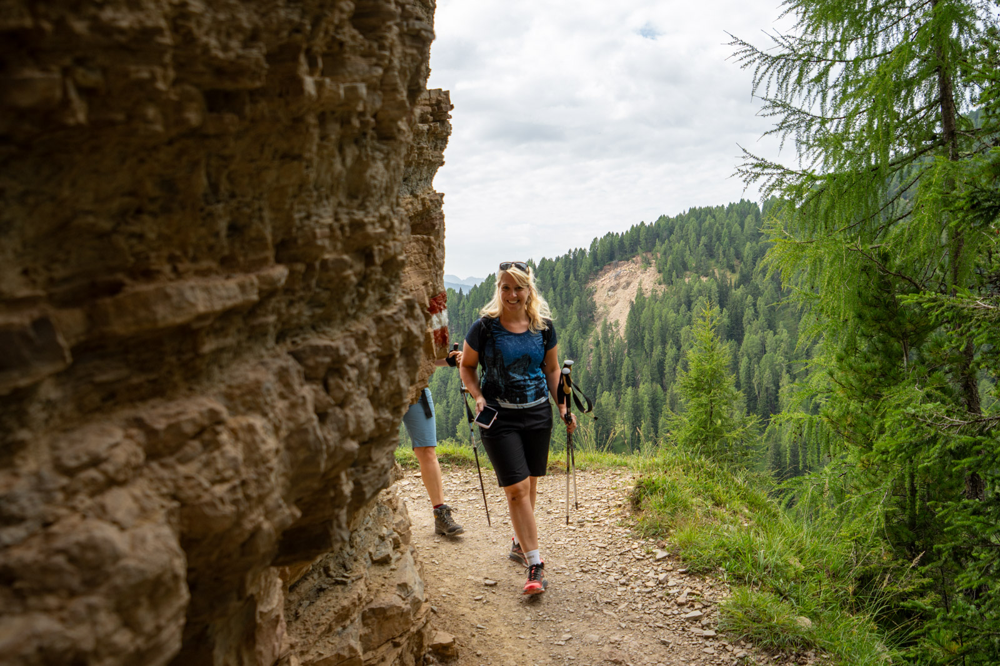
- Usa un grandangolo moderato, 28-35 mm equivalenti, per far entrare l'ambiente.
- Tieni la persona lontana dai bordi, dove il grandangolo deforma.
- Scegli gli oggetti che restano nel fotogramma. Ognuno deve raccontare qualcosa.
Consenso e liberatoria
Per pubblicare un ritratto serve il consenso della persona ritratta. Per un uso commerciale serve una liberatoria scritta. Per i minori, quella di entrambi i genitori o di chi ne ha la responsabilità.
Anche quando non è obbligatorio, chiedere è sempre la scelta giusta. Ne abbiamo parlato nel modulo sulla street.
Esercizio
Circa un'ora con una persona disponibile
Una finestra, quattro luci
- Metti la persona vicino a una finestra con luce indiretta.
- Fotografala con la finestra di fronte, a 45 gradi, di lato e alle spalle.
- Ripeti la luce laterale con un riflettore bianco dal lato opposto.
- Poi fai un ritratto ambientato in un luogo che per lei conta.
- Mostrale le foto e scegliete insieme la migliore.
Macro, sport, architettura
Tre generi con regole proprie. Il molto piccolo, il molto veloce, il molto grande.
Macro: il molto piccolo
La macro vera riproduce il soggetto sul sensore in grandezza naturale o più. Si dice rapporto di riproduzione 1:1. Serve un obiettivo macro dedicato. Ma per iniziare basta molto meno.
- Lenti addizionali da avvitare davanti all'obiettivo. Economiche e leggere.
- Tubi di prolunga tra corpo e obiettivo. Permettono di mettere a fuoco più vicino.
- Un tele con una distanza minima di messa a fuoco corta. Non è macro vera, ma ci si avvicina e lascia lontano dal soggetto.


La profondità di campo minima
Da vicino la profondità di campo si riduce a pochi millimetri, anche a f/11. Per questo:
- Metti a fuoco a mano e muovi te stesso avanti e indietro, non la ghiera.
- Tieni il sensore parallelo al soggetto, se vuoi più parti nitide.
- Usa il focus stacking per i soggetti fermi. Lo vediamo nel modulo 16.
- Il vento è il nemico. Lavora al mattino presto o ripara il soggetto con il corpo.

Sport: il molto veloce
Lo sport mette insieme tutto quello che hai imparato sul tempo, sull'autofocus e sul momento. Le regole di base:
- Tempo rapido. Da 1/1000 in su per fermare corse, salti e palle.
- Autofocus continuo con inseguimento, e una zona di fuoco sul punto dove succederà l'azione.
- Conosci lo sport. Sapere dove andrà la palla, o dove si frena prima della curva, vale più di qualsiasi obiettivo.
- Cerca le emozioni oltre all'azione: l'esultanza, la fatica, la delusione.

Il panning
Per mostrare la velocità si può fare il contrario: tempo lento, da 1/30 a 1/60, e seguire il soggetto girando su se stessi durante lo scatto. Il soggetto resta abbastanza nitido, lo sfondo diventa una scia. Riesce una foto su dieci. È normale.
Architettura: il molto grande
Gli edifici non si muovono. Hai tutto il tempo per scegliere la luce, il punto di vista e le linee. Per questo l'architettura insegna la precisione.

- Linee verticali dritte. Tieni la fotocamera perfettamente in piano, senza inclinarla verso l'alto. Se l'edificio non entra, allontanati o correggi in post-produzione.
- Oppure esagera. Se inclini, inclina molto. Una via di mezzo sembra un errore.
- Luce radente per le facciate in pietra, che ne rivela la texture. Ora blu per gli edifici illuminati.
- Gli interni hanno contrasti forti tra finestre e ombre. Il bracketing aiuta.

Esercizio
Tre uscite brevi
Piccolo, veloce, grande
- Macro. In un giardino trova un fiore, una foglia o un insetto. Fai dieci foto spostando il punto di fuoco di pochi millimetri.
- Sport. A una partita o in un parco, fotografa chi corre. Prova 1/1000 per fermare e 1/40 con il panning.
- Architettura. Scegli un edificio e fotografalo con le verticali perfettamente dritte. Poi dal basso, con le linee che convergono di proposito.

Luce artificiale
Flash, luce continua e luci della città. Quando la luce la porti o la scegli tu.
Quando la luce la porti tu
Fino a qui abbiamo usato la luce che c'era. Con la luce artificiale la scegli e la metti dove vuoi. È il passaggio dal trovare una foto al costruirla.
Le fonti sono due:
- Flash. Un lampo brevissimo e potente. Ferma il movimento e vince sul sole.
- Luce continua. Pannelli LED, lampade, anche una torcia. Vedi subito l'effetto, ma è molto meno potente del flash.
E poi c'è la luce artificiale che trovi: lampioni, insegne, vetrine, candele. Anche quella si sceglie, scegliendo dove metterti.


Il flash sulla fotocamera
Il flash montato sulla slitta, puntato dritto sul soggetto, dà la luce peggiore che esista: piatta, dura, con ombre nere dietro e occhi rossi. Ma basta poco per migliorarla.
- Rimbalzo. Gira la testa del flash verso il soffitto o una parete chiara. La sorgente diventa grande, la luce diventa morbida.
- Flash di schiarita. All'aperto, con il sole alle spalle del soggetto, un flash debole schiarisce il volto in ombra. Abbassa la potenza di uno o due stop.
- Diffusore. Un piccolo diffusore sulla testa del flash aiuta, ma meno del rimbalzo.
Tempo di sincronizzazione
Con il flash, l'otturatore deve essere tutto aperto nel momento del lampo. C'è un tempo massimo oltre il quale non succede più: il tempo di sincro-flash, di solito tra 1/160 e 1/250.
- Sopra quel tempo compare una banda nera nella foto, a meno di usare la modalità HSS, alta velocità di sincronizzazione, che però riduce la potenza.
- Il tempo controlla la luce ambiente. Il diaframma e la potenza del flash controllano la luce del flash. Sono due esposizioni in una.
Con il flash ci sono due luci da esporre. Prima esponi per l'ambiente con il tempo, poi regola il soggetto con il flash.
Il flash fuori dalla fotocamera
Togliere il flash dalla fotocamera è il passo che cambia tutto. Con un trasmettitore radio sulla slitta e il flash su un cavalletto, puoi mettere la luce dove vuoi: di lato, in alto, dietro.
- Una luce a 45 gradi, in alto, è lo schema Rembrandt del modulo 13. Funziona quasi sempre.
- Più vicina è la luce, più è morbida e più cala in fretta verso lo sfondo.
- Più lontana, più è dura e più illumina in modo uniforme.
I modificatori
| Modificatore | Luce | Uso tipico |
|---|---|---|
| Ombrello | Morbida, ampia, poco controllabile | Ritratti di gruppo, primo flash |
| Softbox | Morbida e controllata | Ritratto, still life |
| Beauty dish | Morbida ma con contrasto | Ritratto di moda |
| Snoot e griglie | Dura e concentrata | Dettagli, luci di contorno |
| Gelatine colorate | Cambiano il colore | Atmosfera, sfondi |
Schemi a una e due luci
Una luce
Luce principale con una softbox a 45 gradi, in alto. Un pannello bianco dal lato opposto per schiarire le ombre. È lo schema che usano molti fotografi di ritratto per tutta la vita.
Due luci
- Principale e schiarita. La seconda luce, più debole di uno o due stop, sostituisce il pannello.
- Principale e controluce. La seconda luce dietro il soggetto disegna un bordo luminoso e lo stacca dallo sfondo.
- Principale e sfondo. La seconda luce illumina solo lo sfondo, per schiarirlo o colorarlo.
Le luci della città
Di notte la città è un set già illuminato. Insegne, vetrine e lampioni sono luci di colori diversi.


- Bilanciamento del bianco manuale o in RAW. L'automatico spesso rende tutto arancione o grigiastro.
- ISO alti senza paura, o il treppiede per le scene ferme.
- Ora blu per avere ancora colore nel cielo con le luci accese.
Esercizio
Una sera in casa
Una lampada, un soggetto
- Al buio, metti un oggetto o una persona su un tavolo.
- Usa una sola lampada, o il flash del telefono di un amico, come unica luce.
- Spostala davanti, a 45 gradi, di lato e dietro. Fai una foto per posizione.
- Aggiungi un foglio bianco come riflettore dal lato opposto.
- Se hai un flash, prova il rimbalzo sul soffitto e confronta con il flash diretto.

Tecniche avanzate di ripresa
ETTR, bracketing, focus stacking, panoramiche, lunghe esposizioni e time-lapse.
Esporre a destra
ETTR sta per expose to the right: esporre a destra. Con il RAW si espone il più chiaro possibile senza bruciare le alte luci, con l'istogramma spinto verso il bordo destro. Poi in post-produzione si riporta la luminosità al livello giusto.
Perché funziona: il sensore registra più informazioni nelle zone chiare che in quelle scure. Un'ombra schiarita in post-produzione ha più rumore di una zona già esposta bene in ripresa.
- Funziona con scene a basso contrasto, paesaggi in luce morbida, ISO alti.
- Attenzione: l'istogramma della fotocamera si basa sul JPEG, non sul RAW. Lascia un piccolo margine prima del bordo.
- Non serve con il JPEG, né quando vuoi un'immagine scura di proposito.
Bracketing e HDR
Quando la gamma dinamica della scena supera quella del sensore, una sola esposizione non basta. Il bracketing scatta più foto con esposizioni diverse, per esempio −2, 0 e +2 stop. Un programma le unisce in una sola immagine ad alta gamma dinamica, HDR.
- Imposta il bracketing automatico, tre o cinque scatti a 2 stop di distanza.
- Usa la priorità di diaframma: cambia solo il tempo, la profondità di campo resta uguale.
- Treppiede se puoi. Molti programmi allineano comunque gli scatti a mano libera.
- Unisci in Lightroom con Unione foto, HDR, o in un programma dedicato.
L'HDR ha una cattiva fama per le immagini dai colori finti. Il problema non è la tecnica ma l'eccesso. Un buon HDR non si nota.
Focus stacking
Quando la profondità di campo non basta, nemmeno a diaframma chiuso, si scattano più foto spostando ogni volta il punto di fuoco. Un programma prende da ognuna la parte nitida e le unisce.
- Macro. Un insetto o un fiore nitidi dalla punta al fondo.
- Paesaggio. Un fiore a 30 centimetri e una montagna all'orizzonte, entrambi nitidi a f/8 invece che a f/22, evitando la diffrazione.
- Strumenti. Molte fotocamere hanno il bracketing di messa a fuoco automatico. Per l'unione: Photoshop, Helicon Focus o Zerene Stacker.
Il soggetto deve essere fermo. Il vento è il nemico numero uno.
Panoramiche
Una panoramica unisce più foto affiancate. Dà più ampiezza e più risoluzione di qualsiasi grandangolo.

- Esposizione manuale e bilanciamento del bianco fisso. Se cambiano tra uno scatto e l'altro, l'unione mostra delle bande.
- Fotocamera in verticale per avere più altezza.
- Sovrapponi ogni scatto al precedente per circa un terzo.
- Ruota intorno all'obiettivo, non intorno a te. Con soggetti vicini l'errore si vede.
- Unisci in Lightroom con Unione foto, Panorama.

Lunghe esposizioni
Un tempo di diversi secondi trasforma tutto ciò che si muove: l'acqua diventa seta, le nuvole scie, le persone spariscono. Di giorno serve un filtro ND, un vetro scuro che toglie luce in modo neutro.
| Filtro | Stop tolti | Tempo risultante |
|---|---|---|
| ND8 | 3 | 1/15 s |
| ND64 | 6 | 1/2 s |
| ND1000 | 10 | 8 s |
- Treppiede solido e autoscatto o telecomando.
- Metti a fuoco e componi prima di avvitare il filtro. Con un ND forte il mirino diventa quasi nero.
- Copri il mirino ottico, sulle reflex. La luce che entra da lì può rovinare la foto.
Time-lapse
Un time-lapse è una sequenza di foto scattate a intervalli regolari e montate in un video. Le nuvole corrono, le stelle ruotano, la città si accende.
- Quante foto. A 25 fotogrammi al secondo, 10 secondi di video sono 250 foto.
- Intervallo. Nuvole veloci: 2-3 secondi. Nuvole lente e tramonti: 5-10 secondi. Stelle: un intervallo pari al tempo di scatto più un secondo.
- Tutto in manuale, fuoco compreso. Il bilanciamento automatico crea sfarfallii.
- Tempo di scatto intorno a metà dell'intervallo, per avere un movimento fluido. Di giorno serve spesso un ND.
Esercizio
Una o due uscite, meglio con il treppiede
Tre tecniche, una scena
- Scegli una scena di paesaggio con un primo piano vicino e un cielo luminoso.
- Fai un bracketing di tre scatti e uniscili in HDR.
- Fai una panoramica di cinque scatti verticali e uniscila.
- Fai uno stacking di tre scatti: primo piano, metà, orizzonte.
- Confronta con una foto singola. Quale tecnica ha davvero migliorato la foto?
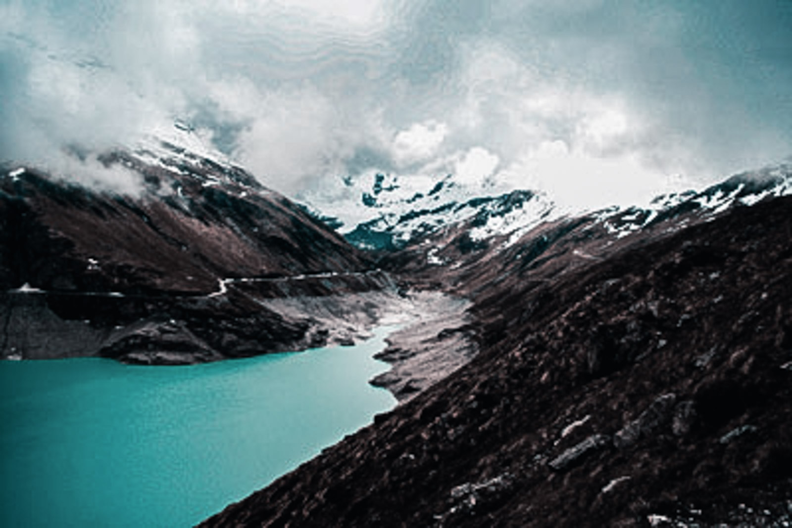
Post-produzione
Dal file grezzo alla foto finita. Un metodo che vale in Lightroom, Luminar o qualsiasi altro programma.
Sviluppare, non truccare
Ogni foto digitale viene elaborata. Se scatti in JPEG lo fa la fotocamera, con le sue scelte. Se scatti in RAW lo fai tu. La post-produzione non è un trucco: è la seconda metà dello scatto.
Il metodo di questo modulo vale per qualsiasi programma. Gli esempi usano i nomi di Lightroom, ma in Luminar, Capture One o darktable trovi gli stessi strumenti con nomi simili.
Una buona post-produzione porta la foto dove l'avevi immaginata. Non la trasforma in un'altra.
Il flusso di lavoro
- Importa e fai la copia di sicurezza, prima di tutto.
- Scegli. Un primo passaggio veloce con le bandierine: tieni o scarta. Un secondo con le stelle per le migliori.
- Sviluppa solo le foto scelte, nell'ordine della prossima lezione.
- Esporta per l'uso che ti serve: web, stampa, archivio.
Il catalogo è la memoria del tuo lavoro. Parole chiave, album e valutazioni ti faranno ritrovare una foto tra dieci anni. Dedicaci dieci minuti dopo ogni uscita.
Una nota se cambi programma: le modifiche e i preset non passano da un programma all'altro. I preset di Lightroom, per esempio, non si convertono direttamente in quelli di Luminar. Conserva i file RAW e, per le foto importanti, esporta anche una versione finita in TIFF o JPEG di alta qualità.
Lo sviluppo, in ordine
L'ordine conta, perché ogni passo cambia quelli dopo.
- Profilo e correzioni dell'obiettivo. Distorsione e vignettatura.
- Ritaglio e orizzonte. Prima di tutto il resto, perché cambia cosa c'è nel fotogramma.
- Bilanciamento del bianco. Temperatura e tinta.
- Esposizione e contrasto generali.
- Luci, ombre, bianchi e neri. Recupera il cielo, apri le ombre, fissa i punti estremi guardando l'istogramma.
- Presenza. Texture, chiarezza e foschia. Con mano leggera.
- Colore. Vividezza, poi HSL per i singoli colori.
- Interventi locali. Maschere, dodge e burn.
- Rumore e nitidezza, per ultimi.
Curve e HSL
La curva dei toni è lo strumento più potente e quello che spaventa di più. In orizzontale ci sono i toni dell'originale, dalle ombre a sinistra alle luci a destra. In verticale come diventano.
- Curva a S leggera: abbassa un po' le ombre, alza un po' le luci. Più contrasto e più profondità.
- Neri sollevati: alza il punto in basso a sinistra. I neri diventano grigio scuro, l'effetto è morbido e cinematografico.
Il pannello HSL agisce su un colore alla volta: tonalità, saturazione e luminosità. Esempi tipici:
- Cielo: blu un po' più scuro e meno saturo per un effetto naturale.
- Vegetazione: verdi e gialli meno saturi, spesso troppo accesi nei file digitali.
- Pelle: arancioni con meno saturazione e un po' più di luminosità.
Maschere, dodge e burn
Gli interventi locali lavorano solo su una parte dell'immagine. Oggi i programmi creano maschere automatiche per il soggetto, il cielo, le persone o lo sfondo con un clic.
- Cielo: un po' meno esposizione e più contrasto.
- Soggetto: un po' più di luce e di texture, per staccarlo.
- Sfumato lineare: come un filtro digradante, per scurire gradualmente il cielo.
- Radiale: per guidare l'occhio verso un punto.
Dodge e burn sono termini della camera oscura: schiarire e scurire a mano piccole zone. Si usa un pennello con flusso basso, più passaggi leggeri. L'occhio va verso le zone più chiare: schiarisci dove vuoi che guardi, scurisci ciò che distrae.
Color grading
Il color grading dà un'atmosfera all'immagine colorando separatamente ombre, toni medi e luci. Lo schema più classico è ombre fredde e luci calde.
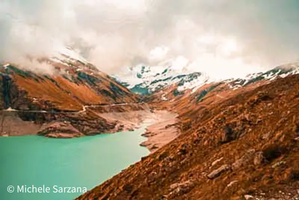
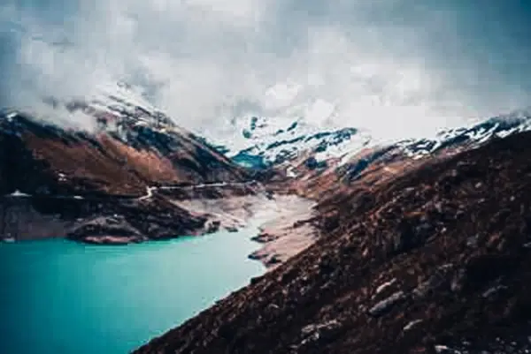
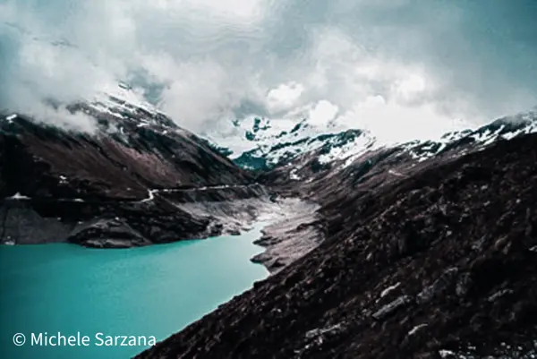
- Decidi l'emozione prima di toccare i cursori.
- Lavora sottile. Se il grading si nota subito, è troppo.
- Crea un preset quando trovi un'atmosfera che ti rappresenta. Applicalo a una serie intera per darle coerenza.
Bianco e nero
Togliere il colore non salva una foto debole. Funziona quando la foto vive di forme, luce e contrasto, e il colore distrae.
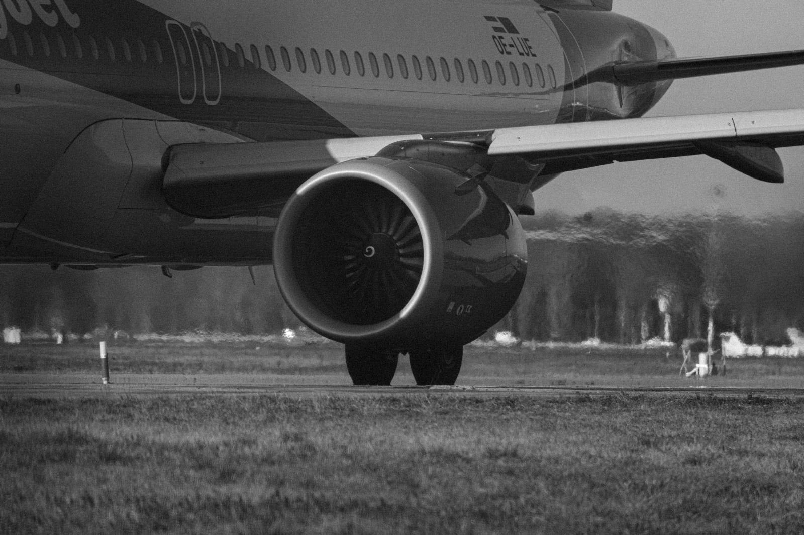
Nella conversione, regola la luminosità dei singoli colori. Scurire il blu rende il cielo drammatico. Schiarire l'arancione illumina la pelle.
Esportare
| Uso | Formato | Dimensioni | Spazio colore |
|---|---|---|---|
| Web e social | JPEG qualità 80 | Lato lungo 2048 px circa | sRGB |
| Stampa in laboratorio | JPEG qualità 100 o TIFF | Dimensione piena | Quello chiesto dal laboratorio, spesso sRGB |
| Stampa fine art | TIFF 16 bit | Dimensione piena | Adobe RGB o ProPhoto |
| Archivio | RAW originale più TIFF o JPEG finito | Dimensione piena | Adobe RGB |
Le foto di questo sito sono esportate da Lightroom a 1600 pixel in sRGB, con le Content Credentials attive. Ne parliamo nell'ultimo modulo.
Esercizio
Un'ora davanti al computer
Una foto, tre versioni
- Scegli un RAW di paesaggio che ti piace.
- Sviluppalo seguendo l'ordine di questo modulo, fino a una versione naturale.
- Crea due copie virtuali. Dai alla prima un'atmosfera calda e alla seconda una fredda, solo con bilanciamento e color grading.
- Converti una quarta copia in bianco e nero.
- Metti le quattro versioni affiancate. Quale racconta meglio quello che hai visto?
Dalla foto al progetto
Scegliere, mettere in sequenza, costruire una serie. E portarla su carta.
Leggere una fotografia
Prima di costruire un progetto bisogna saper guardare le foto, le proprie e quelle degli altri. Davanti a un'immagine prova a rispondere in ordine:
- Cosa vedo? Descrivi senza giudicare. Soggetto, luce, colori, spazio.
- Come è fatta? Focale, punto di vista, composizione, momento.
- Cosa mi fa sentire? E quali scelte producono quell'effetto.
- Cosa toglierei? La domanda più utile per le proprie foto.
Guarda molti libri di fotografia. Non i social, dove le foto passano in un secondo, ma libri e mostre, dove una sequenza è stata pensata da qualcuno.
Scegliere
L'editing, nel linguaggio dei fotografi, non è la post-produzione. È la scelta. Da cento foto di un'uscita, quante meritano di essere viste? Spesso tre o quattro.
- Separa le emozioni dai risultati. Una foto può ricordarti un momento bellissimo ed essere debole. Il ricordo è tuo, non di chi guarda.
- Lascia riposare. Riguarda le foto dopo una settimana. Molte che ti sembravano forti non lo sono più.
- Tieni una sola versione di ogni scena. Tre foto quasi uguali indeboliscono la migliore.
- Chiedi a qualcuno di cui ti fidi. Una seconda opinione onesta vale più di cento cuori.
Costruire una serie
Una serie è un gruppo di foto che insieme dicono qualcosa che nessuna dice da sola. Ha un tema, una coerenza visiva e un ordine.


- Il tema si dice in una frase. Se servono tre frasi, sono più serie.
- La coerenza nasce da scelte ripetute: stessa luce, stessa distanza, stessi colori, stesso formato.
- La varietà tiene vivo lo sguardo: alterna campi larghi e dettagli, pieni e vuoti.
- Da 8 a 20 foto sono una misura buona per iniziare.
La sequenza
L'ordine cambia il significato. Due foto accostate creano un terzo senso che nessuna delle due aveva.
- Apri con forza, con una foto che dica il tema.
- Chiudi con una foto che resti, non necessariamente la più bella.
- Accosta per somiglianza di forma, colore o direzione. O per contrasto.
- Stampa piccolo e disponi le foto su un tavolo. Spostarle con le mani è il modo migliore per trovare l'ordine.
Portfolio e stile
Lo stile non si cerca. Si riconosce, guardando indietro, nelle scelte che fai sempre. Un portfolio serve a renderle visibili.
- Poche foto, le migliori. Un portfolio è giudicato dalla foto più debole.
- Una o due serie valgono più di un elenco di generi diversi.
- Aggiornalo ogni anno. Toglierai più foto di quelle che aggiungi.
Stampare
Una foto stampata è un'altra foto. Si vede la grana, la carta, il dettaglio. Stampare almeno le foto migliori è il modo più onesto di giudicarle.
Gestione del colore
- Calibra il monitor con un colorimetro. Uno schermo troppo luminoso è la causa numero uno delle stampe scure.
- Usa il profilo ICC della combinazione stampante e carta. I laboratori seri lo forniscono.
- Prova colore a schermo, il soft proofing. Ti mostra in anticipo come la foto apparirà su quella carta.
Dimensioni
Per una stampa da vicino si calcolano circa 300 pixel per pollice, cioè circa 118 pixel per centimetro. Un file da 6000 pixel di lato lungo stampa bene fino a circa 50 centimetri. Per stampe grandi, guardate da lontano, ne bastano molti meno.
La carta
| Carta | Carattere |
|---|---|
| Lucida | Colori brillanti e neri profondi, molti riflessi |
| Semilucida, lustre | Il compromesso più usato |
| Opaca fine art | Morbida, senza riflessi, toni più delicati |
| Baritata | La resa della stampa tradizionale in bianco e nero |
Esercizio
Qualche settimana, a tappe
La tua prima serie
- Scrivi un tema in una frase, legato a un luogo che puoi frequentare spesso.
- Fotografalo in almeno cinque uscite diverse.
- Scegli 12 foto. Stampale piccole, anche su carta normale.
- Trova l'ordine su un tavolo. Togli ancora due foto.
- Fai stampare in laboratorio le tre migliori, in formato almeno 20 × 30 cm.

Fotografia e intelligenza artificiale
Strumenti che aiutano, strumenti che inventano. E come restare credibili.
Dove l'intelligenza artificiale è già entrata
L'intelligenza artificiale non è una cosa che arriverà in fotografia. C'è già, spesso senza che ce ne accorgiamo:
- Nella fotocamera. Il riconoscimento degli occhi di persone e animali è apprendimento automatico.
- Nel telefono. Ogni foto è il risultato di più scatti uniti e corretti da algoritmi.
- Nei programmi di sviluppo. Maschere automatiche, riduzione del rumore, rimozione di oggetti, ingrandimento.
- Nella gestione del catalogo. Ricerca per contenuto, scelta assistita delle foto migliori.
Il punto non è se usarla. È capire quali strumenti aiutano a fare la foto che avevi visto e quali la inventano.
Strumenti che aiutano
Riduzione del rumore
È probabilmente il progresso più utile degli ultimi anni. Gli strumenti di riduzione del rumore basati sull'AI, come Denoise in Lightroom, lavorano sul file RAW e recuperano dettagli che i vecchi metodi cancellavano.
Questo cambia la tecnica di ripresa. Oggi conviene ancora di più alzare gli ISO per avere un tempo sicuro.
Maschere automatiche
Selezionare il cielo, il soggetto o le persone con un clic fa risparmiare ore. La decisione su cosa fare con quella maschera resta tua.
Scelta assistita
Alcuni programmi raggruppano le foto simili e segnalano quelle sfocate o con gli occhi chiusi. Sono utili per il primo passaggio. La scelta finale, quella del modulo 18, non si delega.
Strumenti che inventano
Gli strumenti generativi creano pixel che non sono mai esistiti.
- Rimozione generativa. Cancella un cartello, un turista, un cavo, e riempie il vuoto in modo credibile.
- Espansione generativa. Allarga il fotogramma oltre i bordi originali.
- Ingrandimento generativo. Aumenta la risoluzione inventando dettagli plausibili.
- Sostituzione del cielo e generazione di elementi interi.
Sono strumenti potenti. Il problema non è usarli. È non dirlo.
Dove sta il confine
Non esiste una regola valida per tutti. Esistono contesti diversi con regole diverse.
| Contesto | Cosa ci si aspetta |
|---|---|
| Fotogiornalismo e documentario | Nessuna aggiunta o rimozione di elementi. Solo correzioni di tono e colore. |
| Concorsi di natura | Regole molto rigide. Molti chiedono il file RAW originale per verificare. |
| Paesaggio e viaggio personale | Libertà, ma onestà con chi guarda se la scena è stata cambiata. |
| Arte e pubblicità | Tutto è possibile. Si tratta di illustrazione fotografica. |
Una domanda semplice aiuta: chi guarda la foto penserà che la scena era così? Se la risposta è sì e la scena non era così, dillo.
Una buona abitudine è scriverlo nella didascalia, con parole semplici: «cielo sostituito», «elemento rimosso», «immagine estesa». Chi guarda apprezza l'onestà più della perfezione.
Content Credentials
Le Content Credentials sono una sorta di etichetta digitale attaccata a un file. Dicono chi l'ha creato, con quale programma e quali modifiche sono state fatte. Si basano su uno standard aperto, C2PA, sostenuto da produttori di fotocamere, software e testate giornalistiche.
- Si attivano in fase di esportazione, in Lightroom, Photoshop e in alcune fotocamere.
- Si verificano caricando il file su contentcredentials.org/verify.
- Non impediscono la copia. Servono a dimostrare l'origine e la storia di un'immagine.
Tutte le foto di questo sito sono state esportate da Lightroom con le Content Credentials attive. Le credenziali sono registrate da Adobe e collegate a ogni file.
Esercizio
Circa 40 minuti
Aiutare o inventare
- Prendi una tua foto scattata con poca luce e ISO alti. Applica la riduzione del rumore AI e confronta con l'originale ingrandito al 100%.
- Prendi una foto con un elemento che disturba. Toglilo con la rimozione generativa.
- Ingrandisci la zona ritoccata. È credibile?
- Scrivi la didascalia onesta della seconda foto, come la pubblicheresti.
- Esporta la foto con le Content Credentials attive e verificala su contentcredentials.org/verify.
Tutte le fotografie di questo sito sono di Michele Sarzana, che ne detiene tutti i diritti. Non possono essere copiate, scaricate, modificate o pubblicate altrove senza la sua autorizzazione scritta. I testi del corso sono di Michele Sarzana.